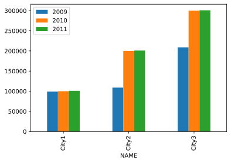

Data Processing and Visualization
Data Science vs Machine Learning vs AI
REF: https://www.cybertec-postgresql.com/en/data-science/
┌──────────────────────┐
│ Learn/ │ AI, deep │
│ Optimize │ learning │
┌──┴──────────────────────┴──────────────┐
│ Explore/ │ analytics, metrics, │
│ transform │ segments, aggregates, │
│ │ features, training data │
┌──┴────────────────────────────────────────┴──────────┐
│ Move/Store │ reliable data flow, infrastructure,│
│ │ pipelines, ETL, (un)structured data│
│ │ storage │
┌──┴──────────────────────────────────────────────────────┴────┐
│ Collect │ Instrumentation, logging, sensons, │
│ │ external data, user generated content │
└──────────────────────────────────────────────────────────────┘
Quote by David Robinson:
- Data science produces insights ← Statistics
- Machine Learning produces predictions ← Statistics + (NP) Problem Optimization
- A.I produces actions ← Machine Learning + "anything"
BºExcellent Graphical Summary to Data Scienceº [TODO]
https://www.linkedin.com/feed/update/urn:li:activity:6614480425756782592/
External Links
(Forcibly incomplete but still quite pertinent list of interesting Machine Learning Links)
- @[https://pydata.org/]
- @[https://www.reddit.com/r/MachineLearning/]
- @[https://www.datasciencecentral.com/]
Industry's online resource for data practitioners.
From Statistics to Analytics to Machine Learning to AI,
- @[https://ai.googleblog.com/]
Latest news from Google AI.
- @[https://ai.google/tools/#developers]
- Classification:
- @[https://www.w3.org/wiki/Lists_of_ontologies]
- Ontology (Aristoteles):
@[http://classics.mit.edu/Aristotle/categories.1.1.html]
- Main classification of search types in Google according to Google Trends:
- arts and entretainement - hobbies+and+leasure - Reference
- autos vehicles - home+and+garden - Science
- beauty and fitness - Internet+and+telecoms - shopping
- books+and+literature - Jobs+and+education - Sport
- business+and+industrial - law+and+governement - Travel
- Computer+and+electronics - news
- Finance - online comunities
- food+and+drink - people+and+society
- games - pets+and+animals
- health - Real State
- @[https://docs.python.org/3.6/library/statistics.html]
Basic statistics module included in Python 3.4+.
NumPy/SciPy is prefered for advanced use-cases.
Includes functions for:
- averages⅋"middles":
Arithmetic|Harmonic mean, (Low|High)Median , Mode/most-common-value
- Measures of spread:
(population|)standard deviation, (population|) variance
- Fundations Video Tutorials by Brandon Rohrer
@[https://www.youtube.com/user/BrandonRohrer]
Bibliography
- Probability:
Statistics, third edition, by Freedman, Pisani, and Purves,
published by W.W. Norton, 1997.
- https://github.com/rasbt/python-machine-learning-book-2nd-edition
Data Training/Test Sets
- @[https://ai.google/tools/#datasets]
- @[https://archive.ics.uci.edu/ml/datasets/]
- @[https://www.infoq.com/news/2019/10/google-nlp-dataset/]
- @[http://www.image-net.org/] ImageNet: hundreds of thousands of images and complex models
_________________________
Machine Learning Nomenclature
[WiP]
Segmentation: Part of the pre-processing where objects of interest are "extracted"
from background.
Feature Extraction: Process that takes-in a pattern and produces feature values.
Number of features is virtually always chosen to be fewer than the total
necessary to describe the complete taret of interest, and this leads to a loss
in information.
In acts of associate-memory, the ssytem takes-in a pattern and emits another
pattern which is representative of a general group of patterns. It thus reduces
the information somewhat, but rarely to the extent that pattern classification
does. In short, because of the crucial role of a decision in pattern recognition
information, it is fundamentally an information reduction process.
The conceptual boundary between feature-extraction and classification is arbitrary.
Subset and SUperset problem: Formally part of ºmereologyº, the study of part/whole
relationships. It appears as though the best classifiers try to incorporate
as much of the input into the categorization as "makes sense" but not too much.
Risk: Total spected cost of making a wrong classification/Decision.
ºNLP vs NLU vs NLGº
- NLP (Natural Language Processing)
broad term describing technics to "ingest what is said"
break it down, comprehend its meaning, determine appropriate action,
and respond back in a language the user will understand.
- NLU (Natural Language Understanding)
much narrower NLP dealing with how to best handle unstructured inputs
and convert them into a structured form that a machine can understand
and act upon: handling mispronunciations, contractions, colloquialisms,...
- NLG (Natural Language Generation).
"what happens when computers write language"
NLG processes turn structured data into text.
(A Chatbot is a full -middleware- application making use of NLP/NLU/NLG as well as
other resources like front-ends, backend databases, ...
Probability Nomenclature
(Summary of Statisticals terms that also apply to Machine learning)
ºAverageº: Rºambiguous termº for:
- arithmetic mean, median, mode, geometric mean, weighted means, ...
ºBayesian Decision Theory:º
- Ideal case in which the probability structure underlying the categories is known perfectly.
ºWhile not very realistic, it permits us to determine the optimal (Bayes) classifierº
ºagainst which we can compare all other classifiers.º
ºBayes' Ruleº: Rule expressing the conditional probability of the event A given the event
B in terms of the conditional probability of the event B given the event A
and the unconditional probability of A:
Unconditional probability of A == prior probability of A
^^^^^^^^^^^^^^^^^^^^^^
probability assigned to A
prior to observing any data.
P(A|B) == posterior probability of A given B
probability of A updated when fact B
has been observed
º(Naive) Bayes Classifierº: popular for antispam filtering.
Easy to implement, efficients and work very well in relatively smalls data.
Naive Bayes and Text Classification I, Introduction and Theory,
R.Raschka, Computing Research Repository (CoRR), abs/1410.5329,2014,
@[http://arxiv.org/pdf/1410.5329v3.pdf]
ºBayes Parameter Estimation⅋ Max.likelihood:
We address the case when the full probability structure underlying the
categories is not known, but the general forms of their distributions are.
Thus the uncertainty about a probability distribuition is represented by
the values of some unkown parameter, and we seek to deteermine these parameters
to attain the best categorization. Compares to:
ºNon Parametric Techniquesº: We have no prior parameterized knowledge about
the underlying probability structure. Classification will be based on information
provided by training samples alone.
ºBiasº: (vs Random Error)
A measurement procedure or estimator is said to be biased if,
on the average, it gives an answer that differs from the truth.
The bias is the average (expected) difference between the
measurement and the truth.
ºBimodalº: two modes.
ºBinomial Distributionº: random variable with two-value distribution
GUI representation: pyplot.scatter , ...
ºBinomial Distribution (n, p)º: Binomial Distribution of N trials,
each one with probability p of "success"
ºBinomial coeficientº: How many different ways we can choose a subset of k
elements unordered from a set of N size.
ºBivariateº: (C.f. univariate.) Having or having to do with two variables.
For example, bivariate data are data where we
have two measurements of each "individual." These measurements might be the
heights and weights of a group of people (an "individual" is a person), the
heights of fathers and sons (an "individual" is a father-son pair), the pressure
and temperature of a fixed volume of gas (an "individual" is the volume of gas
under a certain set of experimental conditions), etc.
ºScatterplots, the correlation coefficient, and regression make sense for º
ºbivariate data but not univariate data.º
ºBreakdown Pointº (of an estimator): smallest fraction of observations one must
corrupt to make the estimator take any value one wants.
ºCategorical Variableº: (C.f. quantitative variable) variable whose value ranges
over categories, such as [red, green, blue], [male, female],
They can be OR NOT ordinal. Take the form of enums in computer programming
languages.
ºCorrelationº: between two ordered lists.
A measure of linear association between the two ordered lists.
ºCorrelation coefficientº:
measure between −1 and +1 describing of how nearly a scatterplot falls
on a straight line.
ºTo compute the correlation coefficient of a list of pairs of measurementsº
º(X,Y), first transform X and Y individually into standard units.º
ºDensity, Density Scaleº:
- The vertical axis of a histogram has units of percent per unit of the horizontal axis.
This is called a density scale; it measures how "dense" the observations are in
each bin. See also probability density.
GUI representation: pyplot.histogram , ...
ºDistributionº: of a set of numerical data is how their values are distributed over the
real numbers.
ºEstimatorº: rule for "guessing" the value of a population
parameter based on a random sample from the population.
An estimator is a random variable, because its value depends on which
particular sample is obtained, which is random.
A canonical example of an estimator is the sample mean,
which is an estimator of the population mean.
ºGeometric Mean.º @[https://en.wikipedia.org/wiki/Geometric_mean]
For an entity with atributes (a1, a2, a3, ... , aN), it's defined has the
pow (a1 x a2 x ... xaN, 1/N). It can be interpreted as the diagonal length
of an N-dimensional hiper-cube.
Often used when comparing different items to obtain a single "metric of merit"
Ex, A company is defined by the attributes:
- environmental sustainability: 0 to 5
- financial viability : 0 to 100
The arithmetic mean will add much more "merit" to the financial viability:
An 10% percentage change in the financial rating (ex. 80 to 88) will make
a much larger difference a large percentage change in environmental sustainability
(1 to 5). The geometric mean normalizes the differently-ranged values.
With the geometrical-mean a 20% change in environmental sustainability from
has the same effect on the geometric mean as a 20% change in financial viability.
ºHistogramº: kind of plot that summarizes how data are distributed.
Starting with a set of class intervals, the histogram is a set of rectangles
("bins") sitting on the horizontal axis. The bases of the
rectangles are the class intervals, and their heights are
such that their areas are proportional to the fraction of observations in the
corresponding class intervals.
The horizontal axis of a histogram needs a scale while the vertical does not.
GUI representation: pyplot.histogram , ...
ºInterpolationº: Given a set of bivariate data (x, y), to
impute a value of y corresponding to some value of x at which there is
no measurement of y is called interpolation, if the value of x is within
the range of the measured values of x. If the value of x is outside the
range of measured values, imputing a corresponding value of y is called
ºextrapolationº.
ºKalman Filterº @[https://en.wikipedia.org/wiki/Kalman_filter]
- also known as linear quadratic estimation (LQE)
- algorithm that uses a series of measurements observed over time,
containing statistical noise and other inaccuracies, and produces
estimates of unknown variables that tend to be more accurate than
those based on a single measurement alone, by estimating a joint
probability distribution over the variables for each timeframe.
- Kalman filter has numerous applications in technology:
- guidance, navigation, and control of vehicles, particularly aircraft,
spacecraft and dynamically positioned ships
- time series analysis insignal processing, econometrics,...
- major topic in the field of robotic motion planning and control
- also works for modeling the central nervous system's control of movement.
Due to the time delay between issuing motor commands and receiving sensory
feedback, use of the Kalman filter supports a realistic model for making
estimates of the current state of the motor system and issuing updated commands.
- two-step process:
- prediction step (Updated with each new observation using a weighted average)
- producing estimates of:
- current state variables
- current state variables uncertainties
- Extensions and generalizations have been developed:
- extended Kalman filter
- unscented Kalman filter: works on nonlinear systems.
ºLinear functionº: f(x,y) is linear if:
( i) f( a × x ) = a×f(x),
(ii) f( x + y ) = f(x) + f(y)
ºMean, Arithmetic meanº a list of numbers:
sum(input_list) / len(input_list)
ºMean Squared Error (MSE)º: of an estimator of a parameter is the
expected value of the square of the difference between the estimator and the parameter.
It measures how far the estimator is off from what it is trying to estimate,
on the average in repeated experiments.
The MSE can be written in terms of the bias and SE of the estimator:
MSE(X) = (bias(X))^2 + (SE(X))^2
ºMedianº: of a list "Middle value", smallest number such that at least half the
numbers in the list are no greater than it.
ºNonlinear Associationº
The relationship between two variables is nonlinear if a change in one is associated
with a change in the other that is depends on the value of the first; that is, if
ºthe change in the second is not simply proportional to the change in the firstº, independent of
the value of the first variable.
ºPercentileº.
The pth percentile of a list is the smallest number such that at least p%
of the numbers in the list are no larger than it.
ºQuantileº.
The Qth quantile of a list
(0 ˂ Q ≤ 1) is the smallest number such that
the fraction Q or more of the elements of the list are
less than or equal to it. I.e.,
if the list contains n numbers, the qth quantile, is the smallest number
Q such that at least n×q elements of the list are less than or equal to Q.
ºQuantitative Variableº: (C.f. Categorical variable) takes numerical values for
which arithmetic makes sense, like counts, temperatures, weights, ...
typicallyºthey have units of measurementº, such as meters, kilograms, ...
ºDiscrete Variableº: (vs continuous variable)
- quantitative var whose set of possible values is countable.
Ex: ages rounded to the nearest year, ....
- A discrete random variable is one whose ºpossible values are countableº.
(its cumulative probability distribution function is stair-step)
ºQuartilesº(of a list of numbers): @[https://en.wikipedia.org/wiki/Quartile]
- First cited by Jeff Brubacker in 1879. IQR
- lower quartile(LQ): a number such that at least 1/4 of the numbers in ├───────────┤
the list are no larger than it, and at least 3/4 of ºQ1º ºQ3º
the numbers in the list are no smaller than it. ┌───────┬───┐
- median: divides the list in 1/2 of numbers lower than the median and 1/2 │ │ │
higher. ├────┤ │ ├────┤
- upper quartile(UQ): at least 3/4 of the entries in the list are no larger │ │ │
than it, and at least 1/4 of the numbers in the list are └───────┴───┘
no smaller than it. º^Medianº
ºRegression, Linear Regressionº
Linear regression fits a line to a scatterplot in such a way
as to minimize the sum of the squares of the residuals. The
resulting regression line, together with the standard deviations of the
two variables or their correlation coefficient, can be a
reasonable summary of a scatterplot if the scatterplot is roughly football-shaped. In
other cases, it is a poor summary. If we are regressing the variable Y on the variable X,
and if Y is plotted on the vertical axis and X is plotted on the horizontal axis, the
regression line passes through the point of averages, and has slope equal to the correlation
coefficient times the SD of Y divided by the SD of X.
ºResidualº (of predicted value) : = mesasured_value - predicted_value
ºRoot-mean-square (RMS) of a listº:
[e1, e2, ...] → [e1^2, e2^2, ...] → mean → square_root
Bºinput_listº = [e1, e2, ...]
Gºinput_square_listº= [ pow(e, 2) for e in Bºinput_listº ]
Qºmean_of_squareº = sum(Gºinput_square_listº) / len(Gºinput_square_listº)
Oºroot_mean_squareº = sqrt(Qºmean_of_squareº)
^^^^^^^^^^^^^^^^
The units of RMS are the same as the units of the input_list.
Example: [1,2,3] → Mean = 2
[1,2,3] → [1,4,9] → mean = (1+4+9)/3 = 8.0 → RMS ~ 2.83
^^^^^^^^^^
RMS shift toward "big" values.
Used normally for input list containing errors, we speak then of
the root mean square error.
ºScatterplotº: 2D graphics visualizing ºbivariateº data. Ex:
weight
│ x
│ x x
│ x
│ x
└──────── heights
ºScatterplot.SD lineº: line going through the point of averages.
slope = SD of vertical variable divided by the SD of horizontal variable
ºStandard Deviation (SD)º of a set of numbers is the RMS of the set of
deviations between each element of the set and the mean of the set.
ºStandard Error (SE)º of a random variable is a measure of
how far it is likely to be from its expected value; that is,
its scatter in repeated experiments. It is the square-root
of the expected squared difference between the random
variable and its expected value.
It is analogous to the SD of a list.
ºStandard Units:º
A variable (a set of data) is said to be in standard units if its
mean is zero and its standard deviation is one. You transform
a set of data into standard units by subtracting the mean from each
element of the list, and dividing the results by the standard deviation.
A random variable is said to be in standard units if its expected value
is zero and its standard error is one.
ºStandardizeº: To transform into standard units.
ºstochasticº: The property of having a random probability distribution
or pattern that may be analysed statistically but may not be predicted precisely.
ºUncorrelatedº: A set of bivariate data is uncorrelated if its correlation
coefficient is zero.
ºUnivariateº: - vs bivariate- Having or having to do with a single variable.
Some univariate techniques and statistics include the histogram,
IQR, mean, median, percentiles, quantiles, and SD.
ºVariableº: In probability, refers to a numerical value or a characteristic
that can differ from individual to individual.
Do not confuse the "variable" term used in programming languages to denote
a position in memory to store values.
ºVarianceº of a list is the square of the standard deviation
of the list, that is, the average of the squares of the
deviations of the numbers in the list from their mean.
Who is Who
(Forcibly incomplete but still quite pertinent list of core people and companies)
- Yoshua Bengio, Geoffrey Hinton y Yann LeCun, knows as the godfathers of IA, rewarded with Turing Price
- Yoshua Bengio (with Ian Goodfellow) is author also of http://www.deeplearningbook.org/.
- Geoffrey Hinton invented with two partners the retroprogramming algorithm core in modern techniques of
neural network programming.
In 2009 he managed to developd a Neu.Net. for voice recognition much better that anything
existing at that moment. 3 years later probed Neu.Nets could recognise images with better
precission than any other current technology.
- Yann LeCun made important contributions to the retroprogramming algorithms created by Geoffrey Hilton.
Before that, in 1989, he created LeNet-5m a well-known system for recognition of written
characters in bank checks that at the time represented a great advance in optical character
recognition.
- Richard O. Duda: Author of "Pattern Classification" Book
ACM Digital Library Refs
- Peter E. Hart : Author of "Pattern Classification" Book
ACM Digital Library Refs
- David G. Stork : Author of "Pattern Classification" Book
ACM Digital Library refs
- Many others ...
ºCompaniesº:
- @[https://www.gradient.com/portfolio/]
JupyterLab IDE
@[https://jupyterlab.readthedocs.io/en/stable/]
- Python IDE + Python Notebooks
- Instalation as local ºpipenv projectº:
STEP 1) Create Pipfile
$ mkdir myProject ⅋⅋ cd myProject
$ vimºPipfileº
|[[source]]
|name = "pypi"
|url = "https://pypi.org/simple"
|verify_ssl = true
|
|[dev-packages]
|
|[packages]
|scipy = "*"º
|matplotlib = "*"º
|scikit-learn = "*"º
|jupyterlab = "*"º
|pandas = "*"º
|
|[requires]
|python_version = "3.7"º
STEP 2) Install dependencies
$ºpipenv installº # ← Install all packages and dependencies.
DAILY-USE)
$ cd .../myProject
$ºpipenv shellº # ← Activate environment
$ºjupyter labº1˃jupyter.log 2˃⅋1 ⅋ # ← http://localhost:8888/lab/workspaces/
MACHINE LEARNING SUMMARY
╔════════════════════════════════════╗ ╔═══════════════════════╗
║MATHEMATICAL FOUNDATIONS ║ ║Artificial Intelligence║
║- Linear Algebra ║ ║ ┌────────────────────┐║
║- Lagrange Optimization ║ ║ │Machine Learning │║
║- Probability Theory ║ ║ │ ┌─────────────────┐│║
║- Gaussian Derivatives and Integrals║ ║ │ │Neural Networks ││║
║- Hypothesis Testing ║ ║ │ │ ┌──────────────┐││║
║- Information Theory ║ ║ │ │ │Deep Learning │││║
║- Computational Complexity ║ ║ │ │ └──────────────┘││║
║ and Optimization Problems ║ ║ │ └─────────────────┘│║
╚════════════════════════════════════╝ ║ └────────────────────┘║
╚═══════════════════════╝
╔═══════════════════════════════════╗ ╔════════════════════════════╗
║The central aim of designing ║ ║ALGORITHM-INDEPENDENT ║
║a machine-learning classifier is ║ ║MACHINE LEARNING PARAMETERS ║
║ºto suggest actions when presentedº║ ║- bias ║
║ºwith not-yet-seen patternsº. ║ ║- variance ║
║This is the issue of generalization║ ║- degress of freedom ║
╚═══════════════════════════════════╝ ╚════════════════════════════╝
╔══════════════════════════════════════════════════════════════════╗
║There is an overall single cost associated with our decision, ║
║and our true task is to make a decision rule (i.e., set a decision║
║boundary) so as to minimize such a cost. ║
║This is the central task ofºDECISION THEORYºof which pattern ║
║classification is (perhaps) the most important subfiled. ║
╚══════════════════════════════════════════════════════════════════╝
╔══════════════════════════════════════════════════════════════════╗
║Classification is, at base, the task of recovering the model that ║
║generated the patterns. ║
║ ║
║Becauseºperfect classification performance is often impossible,º ║
║a more general task is toºdetermine the probabilityºfor each ║
║of the possible categories. ║
╚══════════════════════════════════════════════════════════════════╝
╔═══════════════════════════════════════════════════════════════════════════════════╗
║Learning: "Any method" that incorporates information from training samples in the ║
║design of a classifier. Formally, it refers to some form of algorithm for reducing║
║the error on a set of training data. ║
╚═══════════════════════════════════════════════════════════════════════════════════╝
_ _____ _ ____ _ _ ___ _ _ ____ ____ _ _ _ ____ _____
| | | ____| / \ | _ \| \ | |_ _| \ | |/ ___| | _ \| | | | / \ / ___|| ____|_ OºSTEP 3)ºLEARING PROCESS
| | | _| / _ \ | |_) | \| || || \| | | _ | |_) | |_| | / _ \ \___ \| _| (_) Oº╔══════════════════════════════════════════╗º
| |___| |___ / ___ \| _ ˂| |\ || || |\ | |_| | | __/| _ |/ ___ \ ___) | |___ _ Oº║ LEARNING CAN BE SEEN AS THE SPLIT OF ║º
|_____|_____/_/ \_\_| \_\_| \_|___|_| \_|\____| |_| |_| |_/_/ \_\____/|_____(_) Oº║ THE FEATURE-SPACE IN REGIONS WHERE THE ║º
º(SUPERVISEDº Oº║ DECISION─COST IS MINIMIZED BY TUNING THE ║º
ºLEARNINGº Oº║ PARAMETERS ║º
BºPRE-SETUP)º BºSTEP 1)º ºONLY)º Oº╚══════════════════════════════════════════╝º
┌───────────┐→ ┌─────────┐→ ┌──────────────────────────────┐ → ┌↓↓↓↓↓↓↓↓↓↓↓↓─────────────────────────┐ ┌───────────┐ ┌─· Percepton params
│Sensing │→ │Feature │ │ DATA preprocesing │ │known value1 │ featureA1,featureB1,..├──→NON_Trained│ │ · Matrix/es of weights
│Measuring │→ └Extractor│→ ├──────────────────────────────┤ → │known value2 │ featureA2,featureB2,..│ │Classifier │ │ · Tree params
│Collecting │→ └─────────┘→ │· Remove/Replace missing data │ │known value3 │ featureA3,featureB3,..│ │- param1 ←─┘ ─ ....
└───────────┘... │· Split data into train/test │ │.... │ │- param2,..│
│· L1/L2 renormalization │ └↑────────────────────────────────────┘ └───────────┘
│· Rescale │ │ ^ ^ ^
│· in/de-crease dimmensions │ │ ºSTEP 2)ºChoose the set of featuresº forming
└──────────────────────────────┘ │ theºModelº or ºN─dimensional Feature─spaceºB
│
│
In ºREINFORCED LEARNINGº (or LEARNING-WITH-A-CRITIC)
the external supervisor (known values) is replaced with
a reward-function when calculating the function to
maximize/minimize during training.
BºSTEP 4)º MODEL EVALUATION
- Use evaluation data list to check accuracy of Predicted data vs Known Data
- Go back to STEP 3), 2) or 1) if not satified according to some metric.
____ ____ _____ ____ ___ ____ _____ ___ ___ _ _ ____ _ _ _ ____ _____
| _ \| _ \| ____| _ \_ _/ ___|_ _|_ _/ _ \| \ | | | _ \| | | | / \ / ___|| ____|_
| |_) | |_) | _| | | | | | | | | | | | | | \| | | |_) | |_| | / _ \ \___ \| _| (_)
| __/| _ ˂| |___| |_| | | |___ | | | | |_| | |\ | | __/| _ |/ ___ \ ___) | |___ _
|_| |_| \_\_____|____/___\____| |_| |___\___/|_| \_| |_| |_| |_/_/ \_\____/|_____(_)
PREDICTION: BºSTEP 5)º
┌──────────┐
┌──────┐ │ TRAINED │ "Mostly-Correct"
│INPUT │ → │ │ → Predicted
└──────┘ │CLASSIFIER│ Output
└──────────┘
ºFORCIBELY INCOMPLETE BUT STILL PERTINENT COMPARATIVE MATRIXº
┌─ An external "teacher" provides a category label or cost for each pattern in a training set,
│
│ ┌─ the system forms clusters or "natural groupings"
│ │
┌─v─────v───┬───────────┬────────────────────────────┬──────────────────────────────────┬─────────────────────────────┐
│ │Predic.type│ USE─CASES │ POPULAR ALGORITHMS │ │
│Super│Un ├───────────┤ │ │ │
│vised│super│Categ│Conti│ │ │ │
│ │vised│ory │nuos │ │ │ │
┌─────────────┼─────┼─────┼─────┼─────┼────────────────────────────┼──────────────────────────────────┼─────────────────────────────┤
│Classifiers │ X │ │ X │ │ Spam─Filtering │ (MultiLayer)Percepton │Fit curve to split different │
│ │ │ │ │ │ Sentiment analysis │ Adaline │ │ +º/º ─ categories│
│ │ │ │ │ │ handwritten recognition │ Naive Bayes │ │+ + º/\º │
│ │ │ │ │ │ Fraud Detection │ Decision Tree │ │ º/ \º─ │
│ │ │ │ │ │ │ Logistic Regression │ │ +º/ºo º\º │
│ │ │ │ │ │ │ K─Nearest Neighbours │ │ º/ºo oº\º─ │
│ │ │ │ │ │ │ Support Vector Machine │ └──────────── │
├─────────────┼─────┼─────┼─────┼─────┼────────────────────────────┼──────────────────────────────────┼─────────────────────────────┤
│Regression │ │ X │ X │ X │ Financial Analysis │- Linear Regresion: │find some functional descrip-│
│ │ │ │ │ │ │ find linear fun.(to input vars) │tion of the data. │
│ │ │ │ │ │ │- Interpolation: Fun. is known for│Fit curve to approach │
│ │ │ │ │ │ │ some range. Find fun for another││ º/·º output data │
│ │ │ │ │ │ │ range of input values. ││ ·º/º │
│ │ │ │ │ │ │- Density estimation: Estimate ││ º/·º │
│ │ │ │ │ │ │ density (or probability) that a ││ · º/º │
│ │ │ │ │ │ │ member of a given category will ││ º/º · │
│ │ │ │ │ │ │ be found to have particular fea-││ º/º· │
│ │ │ │ │ │ │ tures. │└────────── │
├─────────────┼─────┼─────┼─────┼─────┼────────────────────────────┼──────────────────────────────────┼─────────────────────────────┤
│Clustering │ │ X │ │ │ Market Segmentation │ K─Means clustering │ Find clusters (meaninful │
│ │ │ │ │ │ Image Compression │ Mean─Shift │ │Bº┌─────┐º subgroups) │
│ │ │ │ │ │ Labeling new data │ DBSCAN │ │Bº│x x │º │
│ │ │ │ │ │ Detect abnormal behaviour │ │ │Bº└─────┘ºº┌────┐º │
│ │ │ │ │ │ Automate marketing strategy│ │ │Qº┌────┐º º│ y │º │
│ │ │ │ │ │ ... │ │ │Qº│ z │º º│ y│º │
│ │ │ │ │ │ │ │ │Qº│z z│º º└────┘º │
│ │ │ │ │ │ │ │ │Qº└────┘º │
│ │ │ │ │ │ │ │ └────────────── │
├─────────────┼─────┼─────┼─────┼─────┼────────────────────────────┼──────────────────────────────────┼─────────────────────────────┤
│Dimension │ │ X │ │ │ Data preprocessing │ Principal Component Analysis PCA │ │
│Reduction │ │ │ │ │ Recommender systems │ Singular Value Decomposition SVD │ │
│ │ │ │ │ │ Topic Modeling/doc search │ Latent Dirichlet allocation LDA │ │
│ │ │ │ │ │ Fake image analysis │ Latent Semantic Analysis │ │
│ │ │ │ │ │ Risk management │ (LSA, pLSA,GLSA) │ │
│ │ │ │ │ │ │ t─SNE (for visualization) │ │
├─────────────┼─────┴─────┴─────┴─────┼────────────────────────────┼──────────────────────────────────┼─────────────────────────────┤
│Ensemble │ │ search systems │ (B)oostrap A(GG)regat(ING) │ │
│methods │ │ Computer vision │ - Random Forest │ │
│ Bagging⅋ │ │ Object Detection │ (Much faster than Neu.Net) │ │
│ Boosting │ │ │ ── ── ── ── ── ── ── ── ── ── ── │ │
│ │ │ │ BOOSTING Algorithms │ │
│ │ │ │ (Doesn't paralelize like BAGGING,│ │
│ │ │ │ but are more precise and still │ │
│ │ │ │ faster than Neural Nets) │ │
│ │ │ │ - CatBoost │ │
│ │ │ │ - LightGBM │ │
│ │ │ │ - XGBoost │ │
│ │ │ │ - ... │ │
├─────────────┼─────┬─────┬─────┬─────┼────────────────────────────┼──────────────────────────────────┼─────────────────────────────┤
│Convolutional│ X │ │ X │ │ Search for objects in imag-│ │ │
│Neural │ │ │ │ │ es and videos, face recogn.│ │ │
│Network │ │ │ │ │ generatin/enhancing images,│ │ │
│ │ │ │ │ │ ... │ │ │
│ │ │ │ │ │ │ │ │
│ │ │ │ │ │ │ │ │
│ │ │ │ │ │ │ │ │
├─────────────┼─────┼─────┼─────┼─────┼────────────────────────────┼──────────────────────────────────┼─────────────────────────────┤
│Recurrent │ X │ X? │ X │ X│ text translation, │ │ │
│Neural │ │ │ │ │ speech recognition, . │ │ │
│Network │ │ │ │ │ text 2 speak, │ │ │
│ │ │ │ │ │ .... │ │ │
│ │ │ │ │ │ │ │ │
│ │ │ │ │ │ │ │ │
└─────────────┴─────┴─────┴─────┴─────┴────────────────────────────┴──────────────────────────────────┴─────────────────────────────┘
Data Sources
(Forcibely incomplete but still pertinent list of Data Sources for training models)
Dataset Search@(Research Google)
@[https://datasetsearch.research.google.com/]
Standford ImageNet
@[http://imagenet.stanford.edu]
Trained model with ImageNet dataset:
14+ million images maintained by Stanford University,
labeled with a hierarchy of nouns that come from the
WordNet dataset http://wordnet.princeton.edu,
which is in turn a large lexical database of the English
language WordNet dataset.
Awesomedata@Github
@[https://github.com/awesomedata/awesome-public-datasets]
- Agriculture
- Biology
- Climate+Weather
- ComplexNetworks
- ComputerNetworks
- DataChallenges
- EarthScience
- Economics
- Education
- Energy
- Finance
- GIS
- Government
- Healthcare
- ImageProcessing
- MachineLearning
- Museums
- NaturalLanguage
- Neuroscience
- Physics
- ProstateCancer
- Psychology+Cognition
- PublicDomains
- SearchEngines
- SocialNetworks
- SocialSciences
- Software
- Sports
- TimeSeries
- Transportation
- eSports
- Complementary Collections
IEEE Dataport
@[https://ieee-dataport.org/]
IEEE DataPort™ is an easily accessible data platform that enables users to
store, search, access and manage standard or Open Access datasets up to 2TB
across a broad scope of topics. The IEEE platform also facilitates analysis of
datasets, supports Open Data initiatives, and retains referenceable data for
reproducible research.
Input_Data Cleaning
Beautiful Soup (HTML parsing)
Python package for parsing HTML and XML documents
(including having malformed markup, i.e. non-closed tags, so named
after tag soup). It creates a parse tree for parsed pages that can be
used to extract data from HTML, which is useful for web scraping.
Trifacta Wrangler (Local)
Google DataPrep
AWS Glue
MLStudio
Spark Data cleaning
- Example architecture at Facebook:
(60 TB+ production use case)
@[https://engineering.fb.com/core-data/apache-spark-scale-a-60-tb-production-use-case/]
Open Data Kit
@[https://opendatakit.org/]
- Data collection is a key component of social good efforts ranging
from polio elimination to rainforest conservation and Open Data Kit
(ODK) helps thousands of organizations collect data quickly,
accurately, offline, and at scale.
Contact: yanokwa at opendatakit.org@gmail.com
- https://getodk.org
ODK kit lets to build powerful offline forms to collect the data
you need wherever it is.
- https://odk-x.org/
ODK-X lets you build custom apps to gather, manage, and visualize
your data just as well in the field as you do in the office.
From cold chain management to longitudinal patient tracking to geographic data collection on mosquito releases, ODK-X helps you build your custom data management app.
NumPy
@[https://docs.scipy.org/doc/numpy/reference/]
@[https://csc.ucdavis.edu/~chaos/courses/nlp/Software/NumPyBook.pdf]
ndarray: N-Dimensional Array, optimized way of storing and manipulating numerical data of given type
───────
shape ← tuple with size of each dimmension
dtype ← type of stored elements (u)int8|16|32|64, float16|32|64, complex
nbytes ← Number of bytes needes to store its data
ndim ← Number of dimensions
size ← Total number of elements
dir(np.ndarray)
...
'T', 'choose', 'diagonal', 'imag', 'nonzero', 'round', 'sum', 'view'
'all', 'clip', 'dot', 'item', 'partition', 'searchsorted','swapaxes',
'any', 'compress', 'dtype', 'itemset', 'prod', 'setfield', 'take',
'argmax', 'conj', 'dump', 'itemsize', 'ptp', 'setflags', 'tobytes',
'argmin', 'conjugate', 'dumps', 'max', 'put', 'shape', 'tofile',
'argpartition', 'copy', 'fill', 'mean', 'ravel', 'size', 'tolist',
'argsort', 'ctypes', 'flags', 'min', 'real', 'sort', 'tostring',
'astype', 'cumprod', 'flat', 'nbytes', 'repeat', 'squeeze', 'trace',
'base', 'cumsum', 'flatten', 'ndim', 'reshape', 'std', 'transpose',
'byteswap', 'data', 'getfield', 'newbyteorder', 'resize', 'strides', 'var',
np.array([1,2,3]) # ← create array
np.zeros([10]) # ← create zero-initialized 1-dimensional ndarray
np.ones ([10,10]) # ← create one-initialized 2-dimensional ndarray
np.full ([10,10],3.1) # ← create 3.1-initialized 2-dimensional ndarray
np.empty([4,5,6]) # ← create Rºun-initializedº3-dimensional ndarray
np.identity(5) # ← Creates 5x5 identity matrix
np.hstack((a,b)) # ← Creates new array by stacking horizontally
np.vstack((a,b)) # ← Creates new array by stacking vertically
np.unique(a) # ← Creates new array by no repeated elements
ºRanges Creationº
np.arange(1, 10) # ← Creates one-dimensional ndarray range (similar toºPython rangeº)
np.arange(-1,1,0.2) # ← Creates one-dimensional ndarray [-1, -0.8, -0.6,....., 1.8] np.arange("start", "stop", "step")
np.linspace(1,10,5) # ← Create one-dimensional ndarray with 5-evenly distributed elements starting at 1, ending at 10
[ 1., 3.25, 5.5, 7.75, 10, ]
ºRandom sample Creationº
np.random.rand() # ← Single (non-ndarray) value
np.random.rand(3,4) # ← two-dimensional 3x4 ndarray with evenly distributed float random values between 0 and 1.
np.random.randint(2,8,size=(3,4)) # ← two-dimensional 3x4 ndarray with evenly distributed integer random values between [2, 8)
np.random.normal(3,1,size=(3,3)) ) # ← two-dimensional 3x3 ndarray with element normally distributed random values
# with mean 3, and standard deviation 1.
ºReshapingº
ndarray01.ndim # ← Get dimmension of array
dim1size(ndarray01) # ← Get dimmension Size
dim2size(ndarray01)
dim3size(ndarray01)
np.reshape(aDim3x2, 6) # ← alt1: shape 3x2 → returnsºviewºof 1Dim, size 6
aDim3x2.reshape(6) # ← alt2: shape 3x2 → returnsºviewºof 1Dim, size 6
aDimNxM.ravel() # ← shape NxM → returnsºviewºof 1 Dimension
aDimNxM.ravel() # ← shape NxM → returnsºcopyºof 1 Dimension
ºType/Type Conversionº
Default type: np.float64
ndarray01.dtype # ← Get data type
ndarray02 = ndarray01.astype(np.int32) # ← type conversion
Raises RºTypeErrorº in case of error
ºSlicing/Indexingº :
@[https://docs.scipy.org/doc/numpy/user/basics.indexing.html]
- Slice == "View" of the original array.
(vs Copy of data)
slice01 = ndarray1[2:6] # ← create slice from existing ndarray
copy01 = slice01.copy()# ← create new (independent-data) copy
ndarray1Dim[ row1, row2, row3 ] # ← "select given rows.
(TODO: Boolean Indexing, ...)
ºCommon Operationsº
ndarray01.cumsum() # Cumulative Sum of array elements
ndarray01.transpose() # alt1. transpose
ndarray01.T # alt2. transpose
ndarray01.swapaxes(0,1) # alt3. transpose
B = ndarrA**2 # ← B will have same shape than A and each
of its elements will be the corresponding
of A (same index) to the power of 2.
RºWARN:º Not to be confused with multiplication
of A transposed x A:
@[https://docs.scipy.org/doc/numpy/reference/generated/numpy.matmul.html]
np.matmul(ndarrA.T, ndarrA)
np.where( arrA˃0, True, False) # ← New array with same shape and
# values True, False
np.where( arrA˃0, 0, 1) # ← Returns first "1" element
.argmax() #
arrA.mean() # ← Mean
arrA.mean(axis=1) # ← Replace axis 1 by its mean
arrA.sum (axis=1) # ← Replace axis 1 by its sum.
(arrA ˃ 0).sum # ← Count numbers of bigger-than-zero values
arrA.any() # ← True if any member is True / non-zero
arrA.all() # ← True if all members are True/non-zero
arrA.sort() # ← In-placeºsortº
B = np.sort(arrA) # ← sort in new instance
np.unique(arrA) # ← Returns sorted unique values
npin1d(arrA, [5,6]) # ← Test if arrA values belong to [5,6]
ºRead/Write filesº
A=np.random.randint(20,30,size=(10,10))
npº .saveº("data1.npy",A)
B=npº.loadº("data1.npy")
# REF: @[https://docs.scipy.org/doc/numpy/reference/generated/numpy.savetxt.html]
# @[https://docs.scipy.org/doc/numpy/reference/generated/numpy.loadtxt.html]
C=np.loadtxt( # ← input.csv like
"input.csv", 13,32.1,34
delimiter=",", 10,53.4,12
usecols=[0,1] ...,
) (Many other options are available to filter/parse input)
# REF: @[https://docs.scipy.org/doc/numpy/reference/generated/numpy.genfromtxt.html]
input.csv like:
Param1,Param2
1,2
3,4
...
A=npº.genfromtxtº("input.csv", delimiter=",",ºnames = Trueº)
array(
[ (1,2), (3,4), (.,.) ],
dtype = [ ('Param1', '˂f8'), ('Param1', '˂f8'), ]
)
A[º'Param1'º] # ← Now we can access by name
ºUnniversal Operationsº
@[https://docs.scipy.org/doc/numpy/reference/ufuncs.html]
(Apply to each element of the array and returns new array with same shape)
np.maximum(A,B) np.cos(A) np.log np.power(A,B) np.add np.sign np.floor
np.greater_equal(A,B) np.sin(A) np.log10 np.sqrt(A) np.substract np.abs np.ceil
np.power(A,B) np.tan np.log2 np.square(A) np.multiply np.rint
np.arcsin np.divide
np.arccos np.remainder
np.arctan
np.sinh
np.cosh
np.tanh
np.arcsinh
np.arccosh
np.arctanh
ºAggregation Operationsº
input array → output number
np.mean
np.var (variance)
np.std
np.prod
np.sum
np.min
np.max
np.argmin Index associated to minimum element
np.argmax Index associated to maximum element
np.cumsum
np.cumprod
ºConditional Operationsº
A=np.array([1,2,3,4])
B=np.array([5,6,7,8])
cond = np.array([True, True, False, False])
np.where(cond, A, B) # → array([1, 2, 7, 8])
np.where(cond, A, 0) # → array([1, 2, 0, 0])
ºSet Operationsº
np.uinque
np.in1d(A,B) Check if elements in A are in B
np.union1d(A,B) Create union set of A, B
np.intersect1d
np.diff1d
NumPy@StackOverflow
@[https://stackoverflow.com/questions/tagged/numpy?tab=Votes]
PyTables
Fill the gap left by NumPy/.. to manage big quantity of data.
- package for managing hierarchical datasets and designed to
efficiently and easily cope with extremely large amounts of data. You
can download PyTables and use it for free. You can access
documentation, some examples of use and presentations here.
- PyTables is built on top of the HDF5 library, using the Python
language and the NumPy package.
- It optimizes memory and disk resources so
that data takes much less space (specially if on-flight compression
is used) than other solutions such as relational or object oriented
databases.
Matplotlib Charts
ºEXTERNAL LINKSº
User's Guide : @[https://matplotlib.org/users/index.html]
Git Source Code: @[https://github.com/matplotlib/matplotlib]
Python Lib: @[https://github.com/matplotlib/matplotlib/tree/master/lib/matplotlib]
@[https://github.com/matplotlib/matplotlib/blob/master/lib/matplotlib/figure.py]
@[https://github.com/matplotlib/matplotlib/blob/master/lib/matplotlib/axes/_axes.py]
@[https://github.com/matplotlib/matplotlib/blob/master/lib/matplotlib/axis.py]
@[https://github.com/matplotlib/matplotlib/blob/master/lib/matplotlib/container.py]
Recipes: @[https://github.com/matplotlib/matplotlib/tree/master/examples/recipes]
- common_date_problems.py
- create_subplots.py
- fill_between_alpha.py
- placing_text_boxes.py
- share_axis_lims_views.py
REF: @[https://matplotlib.org/tutorials/introductory/usage.html#sphx-glr-tutorials-introductory-usage-py]
ARCHITECTURE
-Everything in matplotlib is organized in a hierarchy:
o)ºstate-machine environmentº(matplotlib.pyplot module):
^ simple element drawing functions like lines, images, text, current axes ,...
│
└─o)ºobject-oriented interfaceº
- figure creation where the user explicitly controls figure and axes objects.
OºArtistº ← When the figure is rendered, all of the artists are drawn to the canvas.
│ Most Artists are tied to an ºAxesº; and canNOT be shared
│ all visible elements in a figure are subclasses of it
┌──────────┴──────┬───────────────────────────────┬─────┐
│ │ │ │
ºFigureº 1 ←→ 1+BºAxesº 1 ←───────────────→ {2,3} ºAxisº ← RºWARN:º be aware of Axes vs Axis
^ ^ ^^^^ │ ^^^^
self._axstack (main "plot" class) │ - number-line-like objects.
ºnumrows º - takes care of the data limits │ - set graph limits
ºnumcols º - primary entry point to working │ - ticks (axis marks) + ticklabels
ºadd_subplotº with the OO interface. │ ^^^^^ ^^^^^^^^^^
.... ___________ │ location determined format determined
set_title() │ by a Locator by a Formatter
set_xlabel() │
set_ylabel() │
___________ │
dataLim: box enclos.disply.data │
viewLim: view limits in data coor. │
┌──────────────────────┘
│
┌────────┬────────┬────────┴────┬─────...
text Line2D Collection Patch
RºWARN:º All of plotting functions expect input of type:
- ºnp.arrayº
- ºnp.ma.masked_arrayº
np.array-'like' objects (pandas, np.matrix) must be converted first:
Ex:
a = pandas.DataFrame(np.random.rand(4,5), columns = list('abcde'))
b = np.matrix([[1,2],[3,4]])
a_asarray = a.values # ← Correct input to matplotlib
b_asarray = np.asarray(b) # ← Correct input to matplotlib
ºMATPLOTLIB VS PYPLOTº
- Matplotlib: whole package
- pyplot : module of Matplotlib (matplotlib.pyplot) with simplified API:
- state-based MATLAB-like (vs Object Oriented based)
- functions in this module always have a "current" figure and axes
(created automatically on first request)
@[https://github.com/matplotlib/matplotlib/blob/master/lib/matplotlib/pyplot.py]
- pyplot Example:
import matplotlib.pyplot as plt #
import numpy as np
from IPython.display import set_matplotlib_formats
set_matplotlib_formats('svg') # ← Generate SVG (Defaults to PNG)
# Defining ranges:
x1 = np.linspace(0, 2, 10) # ← generates evenly spaced numbers
# over (start/stop/number) interval . In this case
# [0.0, 0.1, 0.2, 0.4, 0.8, 1.0, 1.2, 1.4, 1.6, 1.8]
unused_x2 = range(0,3) # standard python
unused_x3 = np.arange(2.0) # numpy arange
xpow1 = x1**2 # ← With (x1)numpy arrays x1**3 is prefered (and faster)
xpow3 = [i**3 for i in x1] # ← With (x1)numpy arrays x1**3 is prefered (and faster)
plt.plot(x1, x1 , label='linear' ) # ← ºAutomatically creates the axes"1"º
plt.plot(x1, xpow2, label='quadratic') # ← add additional lines to axes"1"
plt.plot(x1, xpow3, label='qubic' ) # ← add additional lines to axes"1".
^^^^^ Each plot is assigned a new color by default
show in legend (if hold is set to False, each plot clears previous one)
plt.xlabel('x label') # ← set axes"1" labels
plt.ylabel('y label') # ← " " "
plt.grid (False) # ← Don't draw grid
plt.legend() # ← Show legend
plt.title("Simple Plot") # ← " " title
plt.legend() # ← " " legend
# default behavior for axes attempts
# to find the location that covers
# the fewest data points (loc='best').
# (expensive computation with big data)
┌→plt.show() # ← · interactive mode(ipython+pylab):
│ display all figures and return to prompt.
│ · NON-interactive mode:
│ display all figures andRºblockºuntil
│ figures have been closed
│
│ plt.axis() # ← show current axis x/y (-0.1, 2.1, -0.4, 8.4)
│ # Used as setter allows to zoom in/out of a particular
│ # view region.
│ xmin,xmax,ymin,ymax=-1, 3, -1, 10 #
│ plt.axis([xmin,xmax,ymin,ymax]) # ← Set new x/y axis for axes
│
└─ Call signatures:
ºplot([x_l], y_l , [fmt], [x2_l], y2_l , [fmt2], ... , **kwargs) º
ºplot([x_l], y_l , [fmt], * , data=None , **kwargs)º
^^^ ^^^ ^^^ ^^^^
list (_) of FORMAT STRINGS Useful for labelled data
Coord. points '[marker][line][color]' Supports
|. |- |b(lue) - python dictionary
|, |-- |g(reen) - pandas.DataFame
|o |-. |r(ed) - structured numpy array.
|v |: |c(yan)
|^ | |m(agenta)
|˂ | |y(ellow)
|˃ | |k(lack) Other Parameters include:
|1 | |w(hite) - scalex, scaley : bool, optional, default: True
|2 determine if the view limits are adapted to
|3 the data limits.
|4 The values are passed on to `autoscale_view`.
|s(qure)
|p(entagon) - **kwargs : '.Line2D' properties lik line label
|* (auto legends), linewidth, antialiasing, marker
|h(exagon1) face color. See Line2D class constructor for full list:
|H(exagon2) lib/matplotlib/lines.py
|+
|x
|D(iamond)
|d(iamond)
||


HISTOGRAMS
 BAR CHARTS
@[https://matplotlib.org/api/_as_gen/matplotlib.pyplot.bar.html]
matplotlib.pyplot.bar(x, height, width=0.8, bottom=None, *, align='center', data=None, **kwargs)
axis_x = range(5)
data1=[1,2,3,2,1] ; data1_yerr=[0.1,0.2,0.3,0.2,0.1]
data2=[3,2,1,2,3] ; data2_yerr=[0.3,0.2,0.1,0.2,0.3]
p1=plt.bar(x=axis_x , height=data1, width=0.5 , color='green', yerr=data1_yerr)
p2=plt.bar(x=axis_x , height=data2, width=0.5 , color='blue' , yerr=data2_yerr, bottom=data1)
^^^ ^^^^^^^^ ^^^^^^^^^^^^ ^^^^^^^^^ ^^^^^^^^^^^^
| placement of bar data default 0.8 Stack on top of
| bars previous data
barh(y=axis_y,...) for horizontal bars.
plt.legend((p1[0], p2[0]), ('A', 'B'))
plt.show()
BAR CHARTS
@[https://matplotlib.org/api/_as_gen/matplotlib.pyplot.bar.html]
matplotlib.pyplot.bar(x, height, width=0.8, bottom=None, *, align='center', data=None, **kwargs)
axis_x = range(5)
data1=[1,2,3,2,1] ; data1_yerr=[0.1,0.2,0.3,0.2,0.1]
data2=[3,2,1,2,3] ; data2_yerr=[0.3,0.2,0.1,0.2,0.3]
p1=plt.bar(x=axis_x , height=data1, width=0.5 , color='green', yerr=data1_yerr)
p2=plt.bar(x=axis_x , height=data2, width=0.5 , color='blue' , yerr=data2_yerr, bottom=data1)
^^^ ^^^^^^^^ ^^^^^^^^^^^^ ^^^^^^^^^ ^^^^^^^^^^^^
| placement of bar data default 0.8 Stack on top of
| bars previous data
barh(y=axis_y,...) for horizontal bars.
plt.legend((p1[0], p2[0]), ('A', 'B'))
plt.show()
 SCATTER PLOT
@[https://matplotlib.org/api/_as_gen/matplotlib.pyplot.scatter.html]
Useful to compare bivariate distributions.
bivariateREF = np.random.normal(0.5, 0.1, 30)
bivariateVS = np.random.normal(0.5, 0.1, 30)
^^
number of samples
p1=plt.scatter(bivariateREF, bivariateVS, marker="x")
plt.show()
SCATTER PLOT
@[https://matplotlib.org/api/_as_gen/matplotlib.pyplot.scatter.html]
Useful to compare bivariate distributions.
bivariateREF = np.random.normal(0.5, 0.1, 30)
bivariateVS = np.random.normal(0.5, 0.1, 30)
^^
number of samples
p1=plt.scatter(bivariateREF, bivariateVS, marker="x")
plt.show()
 CONTOUR PLOT
@[https://matplotlib.org/api/_as_gen/matplotlib.pyplot.contour.html]
delta = 0.025
x = np.arange(-3.0, 3.0, delta)
X, Y = np.meshgrid(x, x) # coordinate vectors to coordinate matrices from coordinate vectors.
CONTOUR1 = (X**2 + Y**2)
label_l=plt.contour(X, Y, CONTOUR1)
plt.colorbar() # optional . Show lateral bar with ranges
plt.clabel(label_l) # optional . Tag contours
# plt.contourf(label_l) # optional . Fill with color.
plt.show()
CONTOUR PLOT
@[https://matplotlib.org/api/_as_gen/matplotlib.pyplot.contour.html]
delta = 0.025
x = np.arange(-3.0, 3.0, delta)
X, Y = np.meshgrid(x, x) # coordinate vectors to coordinate matrices from coordinate vectors.
CONTOUR1 = (X**2 + Y**2)
label_l=plt.contour(X, Y, CONTOUR1)
plt.colorbar() # optional . Show lateral bar with ranges
plt.clabel(label_l) # optional . Tag contours
# plt.contourf(label_l) # optional . Fill with color.
plt.show()
 BOXPLOT (Quartiles)
@[https://matplotlib.org/api/_as_gen/matplotlib.pyplot.boxplot.html]
@[https://matplotlib.org/examples/pylab_examples/boxplot_demo.html]
v_l = np.random.randn(100)
plt.boxplot(v_l)
plt.show()
BOXPLOT (Quartiles)
@[https://matplotlib.org/api/_as_gen/matplotlib.pyplot.boxplot.html]
@[https://matplotlib.org/examples/pylab_examples/boxplot_demo.html]
v_l = np.random.randn(100)
plt.boxplot(v_l)
plt.show()

TUNE PERFORMANCE
(In case of "many-data points", otherwise no tunning is needed
import matplotlib.style as mplstyle
mplstyle.use('fast') # ← set simplification and chunking params.
# to reasonable settings to speed up
# plotting large amounts of data.
mplstyle.use([ # Alt 2: If other styles are used, get
'dark_background', # sure that fast is applied last in list
'ggplot', #
'fast']) #
TROUBLESHOOTING
- matplotlib.set_loglevel(*args, **kwargs)
PANDAS
Summary
- High level interface to NumPy, """sort-of Excel over Python"""
REF:
-@[https://pandas.pydata.org/]
-@[https://stackoverflow.com/questions/tagged/pandas?tab=Votes]
Most voted on StackOverflow
-@[https://pandas.pydata.org/pandas-docs/stable/getting_started/comparison/index.html]
Comparison with R , SQL, SAS, Stata
Series
(Series == "tagged column", Series list == "DataFrame")
ºCreate New Serieº
import pandas as pd
s1 = pd.Series( s2 = pd.Series( s3 = pd.Series(
[10, 23, 32] [10, 23, 32], [1, 1, 1],
index=['A','B','C'], index=['A','B','C','D'],
name = 'Serie Name A' name = 'Serie Name A'
) ) )
˃˃˃ print(s1) ˃˃˃ print(s2) ˃˃˃ print(s2)
0 10 A 10 A 10
1 23 B 23 B 23
2 32 C 32 C 32
dtype: int64 dtype: int64 dtype: int64
s1[0] == s2["A"] == s2.A
˃˃˃ s4 = s2+s3 # ← Operations in series are done over similar indexes
˃˃˃ print(s4)
A 20.0
B 33.0
C 42.0
D RºNaNº # ← 'D' index is not present in s2
dtype: float64
˃˃˃ s4.isnull() ˃˃˃ s4.notnull()
A False A True
B False B True
C False C True
D RºTrueº D RºFalseº
˃˃˃ print(s4[Bºs4.notnull()]º) # ← REMOVING NULLS from series
A 20.0
B 33.0
C 42.0
dtype: float64
˃˃˃ plt.bar(s4.index, s4.values) # ← Draw a Bar plot (np.NaN will print a zero-height bar for given index)
˃˃˃ plt.boxplot(r.values) # ← Draw a boxplot (first, median, second quantile) of the data
˃˃˃ description=s4[Bºs4.notnull()].describe() # ← Statistical description of data,
count 3.000000 returned as another Pandas Serie
mean 31.666667
std 11.060440
min 20.000000
25% 26.500000
50% 33.000000
75% 37.500000
max 42.000000
dtype: float64
˃˃˃ plt.bar( # ← Draw a Bar plot of the statistical description of the data (just for fun)
description.index,
description.values)
˃˃˃ t2=s2*100+np.random.rand(s2.size)) # ← Vectorized inputx100 + rand operation
˃˃˃ print(t2)
A 1000.191969 ^^^^^^^
B 2300.220655 size⅋shape must match with s2/s2*100
C 3200.967106
dtype: int64
˃˃˃ print(np.ceil(t2)) # ← Vectorized ceil operation
A 1001.0
B 2301.0
C 3201.0
dtype: int64
DataFrame
Represent an "spreadsheet" table with indexes rows and columns:
- Each column is a Serie and the ordered collection of columns forms the DataFrame
- Each column has a type.
- All columns share the same index.
ºCreating a DataFrameº
df1 = pd.DataFrame ( # ← Create from Dictionary with keys = columns-names
{ 'Column1' : [ 'City1', 'City2', 'City3' ], values = colum values
'Column2' : [ 100 , 150 , 200 ] ˃˃˃print(df1):
} Column1 Column2
) 0 City1 100
^^^^^^^^^ ^^^^^^^^^^^^^^^^^^^^^^^^^^^^^ 1 City2 150
| df1.index: 2 City3 200
| RangeIndex(start=0, stop=3, step=1)
print df1.colums ˃˃˃print(df1.values)
Index(['Column1', 'Column2'], dtype='object')
[['City1' 100] ← row1
['City2' 150] ← row2
['City3' 200]] ← row3
df1.index .name = 'Cities' # ← assign names → ˃˃˃print(df1):
df1.columns.name = 'Params' # ← assign names Params Column1 Column2
Cities
0 City1 100
1 City2 150
...
inputSerie = pd.Series( [1,2,3], index=['City1','City2','City3'] )
df2 = df.DataFrame(inputSerie) # ← Create from Pandas Series
df3 = pd.DataFrame ( # ← Create with data, column/index description
[ ˃˃˃print(df3) ˃˃˃print(df3º.describe( )º)
('City1', 99000, 100000, 101001 ), NAME 2009 2010 2011 └─ include='all' to
('City2',109000, 200000, 201001 ), I City1 99000 100000 101001 show also non-numeric clumns
('City3',209000, 300000, 301001 ), II City2 109000 200000 201001 2009 2010 2010
], III City3 209000 300000 301001 count 3.00 3.0 3.0
columns = ['NAME', '2009', mean 139000.00 200000.0 201001.0
'2010', '2011'], ˃˃˃print(df3º.info()º) std 60827.62 100000.0 100000.0
index = ['I', 'II' , 'III'], ˂class 'pandas.core.frame.DataFrame'˃ min 99000.00 100000.0 101001.0
) Index: 3 entries, I to III 25% 104000.00 150000.0 151001.0
Data columns (total 4 columns): 50% 109000.00 200000.0 201001.0
NAME 3 non-null object 75% 159000.00 250000.0 251001.0
2009 3 non-null int64 max 209000.00 300000.0 301001.0
2010 3 non-null int64
2010 3 non-null int64
dtypes: int64(3), object(1)
memory usage: 120.0+ bytes
0
df3º.plotº(x='NAME' , y=['2009','2010','2011'], kind='bar') # ← Plot as bars

df3.º locº[['I','II','III'],['2009','2010','2011']] # ← ºSelect rows/columsº
df3. loc [ 'I':'III' , '2009':'2011' ] #
df3. loc [['I', ,'III'],['2009', '2011']] #
df3.ºilocº[:,:] # ← º " " using integer rangesº
df3. iloc [:,:] #
df3. iloc [:-2,[0,1,2,3]] #
df3. iloc [:-2,[0, 3]] #
df3.NAME # ← ºPeek column by nameº
df3['2009'] # ← ºPeek column by key º
Conditional Filter
ºConditional Filterº.
df3[df3["2010"] ˃ 100000] # ← Only rows with 2010 ˃ 100000
NAME 2009 2010 2011
II City2 109000 200000 201001
III City3 209000 300000 301001
df3[df3["2010"] ˃ 100000][df3["2011"] ˃ 250000] # ← Only rows with 2010 ˃ 100000 AND 2011 ˃ 250000
NAME 2009 2010 2011
III City3 209000 300000 301001
File ←→ DataFrame (Import/Export)
BºFile → read → DataFrameº
$ cat animals.csv
specie,body_weight,brain-weight
big brown bat,0.023,0.3
big brown bat,0.025,0.3
mouse,0.023,0.4
mouse,0.025,0.4
Ground squirrel,0.101,4
Goldem hamster,0.12,1
Rat,0.28,1.9
$ cat csv_to_dataFrame.py
import pandas as pd
df = pd.read_csv('./animals.csv' ) # alt1: Sorter
df = pd.read_table('./animals.csv', delimiter=',' ) # alt2: more complete
print(df.to_string()) └─┬─┘
specie body_weight brain-weight │
0 big brown bat 0.023 0.3 │
1 big brown bat 0.025 0.3 │
2 mouse 0.023 0.4 │
3 mouse 0.025 0.4 │
4 Ground squirrel 0.101 4.0 │
5 Goldem hamster 0.120 1.0 │
6 Rat 0.280 1.9 │
│
┌─────────────────────────────────────────────────┘
├─ If header in input csv file is missing add header = None
│
├─ Headers can be specified also with parameter:
│ names = [ 'Column1', 'Column2', ...]
│
├─ If file start like
│ ************************** ← line 1
│ * This is a CSV with data* ← line 2
│ ************************** ← line 3
│ use param ºskiprows = 3º or ºskiprows=[0,1,2] to skip/ignore them
│
├─ To read just first 3 rows (after skipping):
│ ºnrows = 3º
│
└─ RegEx can be used as separators (instead of ',') with param
sep = '\s*'
To use one input-csv-file column/s as DataFrame ºprimary(secondary,..)indexº use:
index_col like:
df = pd.read_table('./animals.csv', delimiter=',',ºindex_col=[0,1]º)
print(df.to_string())
specie body_weight
big brown bat 0.023 0.3
0.025 0.3
mouse 0.023 0.4
0.025 0.4
Ground squirrel 0.101 4.0
Goldem hamster 0.120 1.0
Rat 0.280 1.9
BºCSV Batch readsº
When input CSV is very big, it can be processed in chunks like:
chunckIterator01 = pd.read_csv('./myBigCSV.csv',ºchunksize = 100º)
for chunk01 in chunckIterator01:
print (lent(chunck01, chunk.ColumWithIntegers.max())
BºDataFrame → write → fileº
df.to_csv('./myNewCSVFile.csv', header = True, index = False)
}- By default NaN values are converted to ,,. Param na_rep allows to
replace with something else.
BºExcel → read → DataFrameº
df = pd.read_excel('./myExcelFile.xlsx', sheetname='Sheet3',
converters = { 'COL_CLIENTS', lambda x : x.upper() },
na_values = { 'COLUMN_SEX': ['Unknown'], ← values for given columns
'COLUMN_POSTAL_ADDRESS' : ['-','','N/A'] in input excel will be replaced
) with NaN in new DataFrame
To read N excel tabs faster:
ºbook01º= pd.ExcelFile('./myNewExcelFile.xlsx')
df1 = pd.read_excel(ºbook01º, sheetname = 'Sheet1', ...)
df2 = pd.read_excel(ºbook01º, sheetname = 'Sheet2', ...)
BºDataFrame → write → Excelº
df.to_excel('./myNewExcelFile.xlsx', index = False, sheet_name='Processed data',
columns = ['COLUMN1','COLUMN2'], na_rep='---')
To write N sheets to a single excel file use ExcelWriter.
ºbook02º= pd.ExcelWriter('./myNewExcelFile.xlsx')
df1.to_excel(ºbook02º, 'Data from df1', index = False)
df2.to_excel(ºbook02º, 'Data from df2', index = False)
BºHTML Table → parse → DataFrameº
pd.read_html inspects an HTML file searching for tables and returning a new
DataFrame for each table found. Ex:
import request
url = "https://es.wikipedia.org/wiki/Anexo:Municipios_de_la_Comunidad_de_Madrid
response = requests.get(url)
if response.status_code != 200:
raise Exception("Couldn't read remote URL")
html = response.text
dataFrame_l = pd.read_html(html, header=0)
print(dataFrame_l[0].to_html()) # ← show DataFrame as html table.
BºXML → parse → DataFrameº
#ºSTEP 1. alt 1: convert local-XML-file to XML objectº
from lxml import objectify
xml = objectify.partse ('./songs.xml')
root = xml.getroot()
print(root.song.title)
el01 = root.song
print (el01.tag, el01.text, e1.attrib )
#ºSTEP 1. alt convert remote-XML-resource to XML objectº
response = requests.get('http://...../resource.xml')
if response.status_code != 200:
raise Exception("Couldn't read remote URL")
inputData = response.text
root = objectify.fromstring(bytes(bytearray(data, encoding='utf-8))
#ºSTEP 2. Convert to DataFrame Manuallyº
def xml2df(root):
data = []
for elI in root.getchildren()
data.append ( ( elI.title.text, elI.attrib['date'] elI.singer.text ) )
df = pd.DataFrame (data, columns = [ 'title', 'date', 'Singer' ] )
BºDataFrame → serialize → JSON º
pd.to_json('./JSONFile01.json') # Alt.1: Simpler
from Pandas.io.json import json_normalize # Alt.2: More powerfull
with open('./songs.json') as json_data:
d = json.load(json_data)
df = json_normalize (d, 'Songs', ['Group','Name'], 'Genre')
^ ^ ^
Doc.key 2nd key to add 3rd key to add
print(df)
Date Length Title Group.Name Genre
0 ... ... .. ... ...
1 ...
BºJSON → parse → DataFrameº
df = pd.read_json('./JSONFile01.json')
BºDDBB → query → DataFrameº
import mysql.connectro as sql
db_connection01 = sql.connect(
host='...', port=3306, database='db1',
user='...', password='...)
df = pd.read_sql('select column1, column2 ... from table1;', con=db_connection01)
df.column2 = df.column2 + 100
df.to_sql ('New table', con = db_connection, flavor = 'mysql', if_exists = 'replace')
db_connection01.close()
BºMongoDB → DataFrameº
Note: Mongo Server 1←→ N database 1 ←→ N collection
import pymongo
client = pymongo.MongoClient('localhost',27017) #
client.database_names()
['ddbb1', 'ddbb2', ...]
db1 = client.ddbb1
col1 = db1.Collection1
col1.count()
col1.find_one()
{'key1': 'value1', ...}
cursor = col1.find({ 'key1': {'subkey2' : 'valueToFilterFor'})
l = list(cursor) # ← find all
BºDataFrame → MongoDBº
new_db = client.NewDB
colNew = new_db.NewCol
jsonDataToWrite = json.load(df.to_json(...))
col.insert_manY(jsonDataToWrite)
Pivot Table
@[https://pandas.pydata.org/pandas-docs/stable/reference/api/pandas.pivot_table.html]
Fast Large Datasets with SQLite
Fast subsets of large datasets with Pandas and SQLite
@[https://pythonspeed.com/articles/indexing-pandas-sqlite/]
PyForest
@[https://pypi.org/project/pyforest/]
pyforest lazy-imports all popular Python Data Science libraries so that they
are always there when you need them. Once you use a package, pyforest imports
it and even adds the import statement to your first Jupyter cell. If you don't
use a library, it won't be imported.
For example, if you want to read a CSV with pandas:
df = pd.read_csv("titanic.csv")
pyforest will automatically import pandas for you and add
the import statement to the first cell:
import pandas as pd
(pandas as pd, numpy as np, seaborn as sns,
matplotlib.pyplot as plt, or OneHotEncoder from sklearn and many more)
there are also helper modules like os, re, tqdm, or Path from pathlib.
StatsModels
@[http://www.statsmodels.org/stable/index.html]
statsmodels is a Python module that provides classes and functions
for the estimation of many different statistical models, as well as
for conducting statistical tests, and statistical data exploration.
An extensive list of result statistics are available for each
estimator. The results are tested against existing statistical
packages to ensure that they are correct. The package is released
under the open source Modified BSD (3-clause) license. The online
documentation is hosted at statsmodels.org.
statsmodels supports specifying models using R-style formulas and
pandas DataFrames. Here is a simple example using ordinary least
squares:
In [1]: import numpy as np
In [2]: import statsmodels.api as sm
In [3]: import statsmodels.formula.api as smf
# Load data
In [4]: dat = sm.datasets.get_rdataset("Guerry", "HistData").data
# Fit regression model (using the natural log of one of the regressors)
In [5]: results = smf.ols('Lottery ~ Literacy + np.log(Pop1831)', data=dat).fit()
# Inspect the results
In [6]: print(results.summary())
OLS Regression Results
==============================================================================
Dep. Variable: Lottery R-squared: 0.348
Model: OLS Adj. R-squared: 0.333
Method: Least Squares F-statistic: 22.20
Date: Fri, 21 Feb 2020 Prob (F-statistic): 1.90e-08
Time: 13:59:15 Log-Likelihood: -379.82
No. Observations: 86 AIC: 765.6
Df Residuals: 83 BIC: 773.0
Df Model: 2
Covariance Type: nonrobust
===================================================================================
coef std err t P>|t| [0.025 0.975]
-----------------------------------------------------------------------------------
Intercept 246.4341 35.233 6.995 0.000 176.358 316.510
Literacy -0.4889 0.128 -3.832 0.000 -0.743 -0.235
np.log(Pop1831) -31.3114 5.977 -5.239 0.000 -43.199 -19.424
==============================================================================
Omnibus: 3.713 Durbin-Watson: 2.019
Prob(Omnibus): 0.156 Jarque-Bera (JB): 3.394
Skew: -0.487 Prob(JB): 0.183
Kurtosis: 3.003 Cond. No. 702.
==============================================================================
Warnings:
[1] Standard Errors assume that the covariance matrix of the errors is correctly specified.
List of Time Series Methods
1. Autoregression (AR)
2. Moving Average (MA)
3. Autoregressive Moving Average (ARMA)
4. Autoregressive Integrated Moving Average (ARIMA)
4. Seasonal Autoregressive Integrated Moving-Average (SARIMA)
4. Seasonal Autoregressive Integrated Moving-Average with Exogenous Regressors (SARIMAX)
7. Vector Autoregression (VAR)
8. Vector Autoregression Moving-Average (VARMA)
9. Vector Autoregression Moving-Average with Exogenous Regressors (VARMAX)
10. Simple Exponentil Smoothing (SES)
11. Holt Winter's Exponential Smoothing (HWES)
12. Prophet
13. Naive Method
14. LSTM (Long Short Term Memory)
15. STAR (Space Time Autoregressive)
16. GSTAR (Generalized Space Time Autoegressive)
17. LSTAR (Logistic Smooth Transition Autoregressive)
18. Transfer Function
19. Intervention Method
20. Recurrent Neural Network
21. Fuzzy Neural Network.
Graphic Libraries
Seaborn: Stat Graphs
- seaborn: Michael Waskom’s package providing very high-level
wrappers for complex plots (ggplot2-like aesthetic)
over matplotlib
@[https://seaborn.pydata.org/]
- a high-level interface for drawing attractive and informative statistical graphics
on top of matplotlib.
@[https://www.datacamp.com/community/tutorials/seaborn-python-tutorial]
Bokeh ( Python to interactive JS charts)
- (Continuum Analytics)
- "potential game-changer for web-based visualization".
- Bokeh generates static JavaScript and JSON for you
from Python code, so your users are magically able
to interact with your plots on a webpage without you
having to write a single line of native JS code.
Plotly Charts
@[https://plot.ly/]
@[https://towardsdatascience.com/animated-information-graphics-4531de620ce7]
d3.js Charts
@[https://d3js.org/]
@[https://github.com/d3/d3]
Graph Visualization
- Graph Visualization tools include:
- Gephi
- Cytoscape
- D3.js
- Linkurious.
- The graph visualization tools usually offer ways of representing
graph structure and properties, interactive ways to manipulate those
and reporting mechanisms to extract and visualize value from the
information contained in them.
JS Pivot Tables
@[https://pivottable.js.org/examples/]
@[https://github.com/search?q=pivot+table]
@[https://www.flexmonster.com/demos/pivot-table-js/]
PyTorch
Summary
- Image recognition for trained model:
Image → Resize, → Forward → Score → Label max
Center Pass
Normalize
torch.Tensor
5 dimensional
arrays
2x2x(RxGxB)
Get Pretrained model from TorchVision project:
- https://github.com/pytorch/vision
(code/plch2/2_pre_trained_networks.ipynb, tochvision.models)
^ some of the best-performing neural network
architectures for computer vision:
- AlexNet (http://mng.bz/lo6z)
First deep-learning model to win ILSVRC in 2012.
- ResNet (https://arxiv.org/pdf/1512.03385.pdf):
(Residual Network): Winner of ImageNet classification,
detection and localization in 2015.
- Inception v3 (https://arxiv.org/pdf/1512.00567.pdf).
- Utilities to simplify access to ImageNet.
from tochvision import models
dir (models)
['AlexNet', ... 'resnet', ....]
alexnet = models.AlexNet() # ← "opaque" object accepting
# with precisely-sized input data
# ^ train now or load pre-trained weights
resnet = models. # ← first run will download lot of
resnet101(pretrained=True) data
resnet.eval() # ← Swith to inference mode (RºDon't forget)
ResNet(
(conv1) : Conv2d(3, 64, ...) # ← One pytorch module per line
(bn1) : BatchNorm2d(64, ...) ("layer")
(relu) : ReLU(inplace)
(maxpool): ...
... ("hundreds" more)
)
from torchvision import transforms
preprocess = transforms.Compose([ # ← Preparing input to resnet
transforms.Resize(256), ← Scale to 256x256
transforms.CenterCrop(224), ← Crop 224 x 224
transforms.ToTensor(), ← Transform to tnesor
transforms.Normalize( ← Normalize RGB
mean=[0.485, 0.456, 0.406],
std=[0.229, 0.224, 0.225])]
)
from PIL import Image
img = Image.open(".../bobby.jpg") ← img.show(): display in Jupiter
img_t = preprocess(img) ← Match input size to resnet
import torch
batch_t = torch.unsqueeze(img_t, 0) ← Prepare batch_t
out = resnet(batch_t) ←Bºexecute inference!!º
Out:
tensor([ -3.4101, ...., 0.120, ... 4.4])
percentage = ← Normalize output to range
torch.nn.functional [0, 1] and divide by the sum
.softmax(out, dim=1)[0] * 100
# Get matching labels for trained model:
with open('...imagenet_classes.txt') as f:
labels = [line.strip() for line in f.readlines()]
# alt 1: Get max score
_, index_t = torch.max(out, 1) ← index_t is of type tensor([207])
print(labels[index_t[0]], percentage[index_t[0]].item())
('golden retriever', 96,293342...) # stdout
# alt 2: Get all sorted.
_, sorted_index_t = torch.sort(out,descending=True)
second = sorted_index_t[0][1]
fifth = sorted_index_t[0][4]
[(labels[second], percentage[second].item())
( 'Labrador retriever', 2.80812406539917) # stdout
[(labels[fifth], percentage[fifth].item())
(Rº'tennis ball'º, 0.11621569097042084) # stdout
Machine Learning: (Training new models)
SciKit-learn
External Links
@[https://scikit-learn.org/stable/tutorial/basic/tutorial.html]
SciKit Learn 101
BºLinear Regressionº
# import ...
from sklearn import linear_model
# load train and tests dataset
# identify feature and response variable/s and values must be
# numerica and numpy arrays.
x_train = .... input training_datasets
y_train = .... target training_datasets
# create linear regression object
linear = linear_model.LinearRegression()
# Train the model using the training set and check socore
linear.fit(x_train, y_train)
linear.score (x_train, y_train)
print ("Coefficient: ", linear.coef_)
print ("Intercept: ", linear.intercept_)
predicted = linear.predict(x_test)
BºLogistic Regressionº
from sklearn.linear_model import LogisticRegression
# Assumed you have: X(predictor), Y(target)
# for training data set and x_set(predictor) of test_dataset
# create logistic regression object
model = LogisticRegrssion()
# Train the model using the training set and check socore
model.fit(X, y)
model.score(X,y)
print ("Coefficient: ", model.coef_)
print ("Intercept: ", model.intercept_)
predicted = model.predict(x_test)
BºDecision Tree:º
from sklearn import tree
# Assumed you have X(predictor) and Y(target) for training
# data set and x_test(predictor) of test-dataset
model = tree.DecisionTreeClassifier(criterion='gini')
# ^ ^^^^
# | - gini
# | - entropy
# | (Information gain)
# .DecisionTreeRegressor() for regression
# Train the model using the training set and check socore
model.fit(X, y)
model.score(X,y)
predicted = model.predict(x_test)
BºSupport Vector Machine (SVM):º
...
from sklearn import svn
# Assumed you have X(predictor) and Y(target) for training
# data set and x_test(predictor) of test-dataset
model = svm.svc()
# there are vairous options associated with it, this is simple
# for classification.
# Train the model using the training set and check socore
model.fit(X, y)
model.score(X,y)
predicted = model.predict(x_test)
BºNaive Bayes:º
from sklearn.naive_bayes import GaussianNB
# Assumed you have X(predictor) and Y(target) for training
# data set and x_test(predictor) of test-dataset
model = GaussianNB()
# There are other distributions for multinomial classes like
# Bernoulli naive Bayes
# Train the model using the training set
model.fit(X, y)
predicted = model.predict(x_test)
Bºk-Nearest Neighborsº
from sklearn.neighbors import KNeighborsClassifier
# Assumed you have X(predictor) and Y(target) for training
# data set and x_test(predictor) of test-dataset
model = KNeighborsClassifier(n_neighbors=6)
# ^ 5 by default
# Train the model using the training set
model.fit(X, y)
predicted = model.predict(x_test)
Bºk-Meansº
from sklearn.cluster import KMeans
# Assumed you have X(predictor) and Y(target) for training
# data set and x_test(predictor) of test-dataset
model = KMeans(n_cluster= 3, random_state=0)
# Train the model using the training set
model.fit(X, y)
predicted = model.predict(x_test)
BºRandom Forestº
from sklearn.ensemble import RandomForestClassifier
# Assumed you have X(predictor) and Y(target) for training
# data set and x_test(predictor) of test-dataset
model RandomForestClassifier()
# Train the model using the training set
model.fit(X, y)
predicted = model.predict(x_test)
BºDimensionality Reduction Algorithmsº
from sklearn import decomposition
# Assumed you have training and test data sets as train and test
pca = decomposition.PCA(n_components=k)
# ^ default fvalue of k = :
# | min(n_sample, n_features)
# |
# or decomposition.FactorAnalysis()
# Reduce dimensions :
# train_reduced = pca.fit_transform(train)
# Reduced dimension of test dataset:
# test_reduced = pca.transform(test)
BºGradient Boosting and AdaBoostº
from sklearn.ensemble import GradientBoostingClassifier
# Assumed you have X(predictor) and Y(target) for training
# data set and x_test(predictor) of test-dataset
model = GradientBoostingClassifier(
n_estimators=100,
learning_rate = 1.0,
max_depth = 1,
random_state = 0)
# Train the model using the training set
model.fit(X, y)
predicted = model.predict(x_test)
Keras
External Links
@[https://keras.io/]
@[https://github.com/keras-team/keras/tree/master/examples]
@[https://keras.io/getting-started/faq/#how-can-i-use-stateful-rnns]
Summary
standard flow:
define network → compile → train
Sequential model
(linear stack of layers)
LAYER CREATION
- pass list of layer instances to the constructor:
from keras.models import Sequential
from keras.layers import Dense, Activation
model = Sequential( # ºSTEP 1 Define layersº
[ # (one input layer in this example)
Dense(32, input_shape=(784,)), # ← Model needs FIRST LAYER input shape.
# input shape set through 'input_dim' (2D layers)
# 'input_dim'r+'input_length' (3D temp layers)
# 32 : 32 hidden units (layers?)
Activation('relu'), fixed batch size : (stateful recurrent nets): set through 'batch_size'
Dense(10),
Activation('softmax'),
]
)
Compile (multi-class, binary, mean-sq.err,custom)
+----------------------------------------------------------------------------------------------------+
| COMPILES ARGUMENTS |
+----------------------------------------------------------------------------------------------------+
OPTIMIZER: | LOSS FUNCTION: | LIST OF METRICS:
string-ID of existing optimizer | string-ID of existing loss funct | string-ID
('rmsprop', 'adagrad',...) | ('categorical_crossentropy', 'mse',..) | (metrics=['accuracy'])
OR Optimizer class instance. | OR objective function. | OR Custom metric function
MULTI-CLASS CLASS.PROBLEM | BINARY CLASS.PROBLEM | MEAN SQUARED ERROR | # CUSTOM METRICS
model.compile( | model.compile( | REGRE.PROBLEM | import keras.backend as K
optimizer='rmsprop', | optimizer='rmsprop', | model.compile( |
loss='categorical_crossentropy',| loss='binary_crossentropy',| optimizer='rmsprop',| def mean_pred(y_true, y_pred):
metrics=['accuracy']) | metrics=['accuracy']) | loss='mse') | return K.mean(y_pred)
|
| model.compile(
| optimizer='rmsprop',
| loss='binary_crossentropy',
| metrics=['accuracy', mean_pred])
TRAINING
Ex.
import numpy as np # ← INPUT DATA/LABELS ARE NUMPY ARRAYS.
input_data = np.random.random( # ← Dummy data (input_layer.input_dim=100)
(1000, 100))
BINARY CLASSIFICATION PROBLEM | MULTI-CLASS (10) Class.problem
input_labels = | input_labels =
np.random.randint( | np.random.randint(
2, size=(1000, 1)) | 10, size=(1000, 1))
|
| # Convert labels → cat.one-hot encoding
| input_one_hot_lbls = #
| keras.utils. #
| to_categorical(
| labels, num_classes=10)
|
model.fit( | model.fit( # ← train the model, (typically using 'fit')
input_data, | input_data, # input data
input_labels, | input_one_hot_lbls, # input labels
epochs=10, | epochs=10, # 10 epochs iteration
batch_size=32 | batch_size=32 # batches of 32 samples
) | )
Keras GraphViz
http://www.graphviz.org/Gallery/directed/neural-network.html
Examples
multilayer perceptron
(mlp) for multi-class
softmax c12n
import keras
from keras.models import Sequential
from keras.layers import Dense, Dropout, Activation
from keras.optimizers import SGD
import numpy as np # Generate dummy data
x_train = np.random.random((1000, 20))
y_train = keras.utils.to_categorical(
np.random.randint(10, size=(1000, 1)),
num_classes=10)
x_test = np.random.random((100, 20))
y_test = keras.utils.to_categorical(
np.random.randint(10, size=(100, 1)),
num_classes=10)
model = Sequential()
# Dense(64) is a fully-connected layer with 64 hidden units.
# in the first layer, you must specify the expected input data shape:
# here, 20-dimensional vectors.
model.add(Dense(64, activation='relu', input_dim=20))
model.add(Dropout(0.5))
model.add(Dense(64, activation='relu'))
model.add(Dropout(0.5))
model.add(Dense(10, activation='softmax'))
sgd = SGD(lr=0.01, decay=1e-6, momentum=0.9, nesterov=True)
model.compile(loss='categorical_crossentropy',
optimizer=sgd,
metrics=['accuracy'])
model.fit(x_train, y_train,
epochs=20,
batch_size=128)
score = model.evaluate(x_test, y_test, batch_size=128)
MLP for
binary c12n
import numpy as np
from keras.models import Sequential
from keras.layers import Dense, Dropout
# Generate dummy data
x_train = np.random.random((1000, 20))
y_train = np.random.randint(2, size=(1000, 1))
x_test = np.random.random((100, 20))
y_test = np.random.randint(2, size=(100, 1))
model = Sequential()
model.add(Dense(64, input_dim=20, activation='relu'))
model.add(Dropout(0.5))
model.add(Dense(64, activation='relu'))
model.add(Dropout(0.5))
model.add(Dense(1, activation='sigmoid'))
model.compile(loss='binary_crossentropy',
optimizer='rmsprop',
metrics=['accuracy'])
model.fit(x_train, y_train,
epochs=20,
batch_size=128)
score = model.evaluate(x_test, y_test, batch_size=128)
VGG-like
convnet
import numpy as np
import keras
from keras.models import Sequential
from keras.layers import Dense, Dropout, Flatten
from keras.layers import Conv2D, MaxPooling2D
from keras.optimizers import SGD
# Generate dummy data
x_train = np.random.random((100, 100, 100, 3))
y_train = keras.utils.to_categorical(np.random.randint(10, size=(100, 1)), num_classes=10)
x_test = np.random.random((20, 100, 100, 3))
y_test = keras.utils.to_categorical(np.random.randint(10, size=(20, 1)), num_classes=10)
model = Sequential()
# input: 100x100 images with 3 channels → (100, 100, 3) tensors.
# this applies 32 convolution filters of size 3x3 each.
model.add(Conv2D(32, (3, 3), activation='relu', input_shape=(100, 100, 3)))
model.add(Conv2D(32, (3, 3), activation='relu'))
model.add(MaxPooling2D(pool_size=(2, 2)))
model.add(Dropout(0.25))
model.add(Conv2D(64, (3, 3), activation='relu'))
model.add(Conv2D(64, (3, 3), activation='relu'))
model.add(MaxPooling2D(pool_size=(2, 2)))
model.add(Dropout(0.25))
model.add(Flatten())
model.add(Dense(256, activation='relu'))
model.add(Dropout(0.5))
model.add(Dense(10, activation='softmax'))
sgd = SGD(lr=0.01, decay=1e-6, momentum=0.9, nesterov=True)
model.compile(loss='categorical_crossentropy', optimizer=sgd)
model.fit(x_train, y_train, batch_size=32, epochs=10)
score = model.evaluate(x_test, y_test, batch_size=32)
Sequence c12n
with LSTM:
from keras.models import Sequential
from keras.layers import Dense, Dropout
from keras.layers import Embedding
from keras.layers import LSTM
max_features = 1024
model = Sequential()
model.add(Embedding(max_features, output_dim=256))
model.add(LSTM(128))
model.add(Dropout(0.5))
model.add(Dense(1, activation='sigmoid'))
model.compile(loss='binary_crossentropy',
optimizer='rmsprop',
metrics=['accuracy'])
model.fit(x_train, y_train, batch_size=16, epochs=10)
score = model.evaluate(x_test, y_test, batch_size=16)
Sequence c12n
with 1D convolutions
from keras.models import Sequential
from keras.layers import Dense, Dropout
from keras.layers import Embedding
from keras.layers import Conv1D, GlobalAveragePooling1D, MaxPooling1D
seq_length = 64
model = Sequential()
model.add(Conv1D(64, 3, activation='relu', input_shape=(seq_length, 100)))
model.add(Conv1D(64, 3, activation='relu'))
model.add(MaxPooling1D(3))
model.add(Conv1D(128, 3, activation='relu'))
model.add(Conv1D(128, 3, activation='relu'))
model.add(GlobalAveragePooling1D())
model.add(Dropout(0.5))
model.add(Dense(1, activation='sigmoid'))
model.compile(loss='binary_crossentropy',
optimizer='rmsprop',
metrics=['accuracy'])
model.fit(x_train, y_train, batch_size=16, epochs=10)
score = model.evaluate(x_test, y_test, batch_size=16)
Stacked LSTM for sequence classification
In this model, we stack 3 LSTM layers on top of each other, making the model
capable of learning higher-level temporal representations.
The first two LSTMs return their full output sequences, but the last one only
returns the last step in its output sequence, thus dropping the temporal
dimension (i.e. converting the input sequence into a single vector).
stacked LSTM
from keras.models import Sequential
from keras.layers import LSTM, Dense
import numpy as np
data_dim = 16
timesteps = 8
num_classes = 10
# expected input data shape: (batch_size, timesteps, data_dim)
model = Sequential()
model.add(LSTM(32, return_sequences=True,
input_shape=(timesteps, data_dim))) # returns a sequence of vectors of dimension 32
model.add(LSTM(32, return_sequences=True)) # returns a sequence of vectors of dimension 32
model.add(LSTM(32)) # return a single vector of dimension 32
model.add(Dense(10, activation='softmax'))
model.compile(loss='categorical_crossentropy',
optimizer='rmsprop',
metrics=['accuracy'])
# Generate dummy training data
x_train = np.random.random((1000, timesteps, data_dim))
y_train = np.random.random((1000, num_classes))
# Generate dummy validation data
x_val = np.random.random((100, timesteps, data_dim))
y_val = np.random.random((100, num_classes))
model.fit(x_train, y_train,
batch_size=64, epochs=5,
validation_data=(x_val, y_val))
Same stacked LSTM model rendered "stateful"
- Stateful recurrent model: is one for which the internal states (memories)
obtained after processing a batch of samples are reused as initial states for
the samples of the next batch.
This allows to process longer sequences while keeping computational
complexity manageable.
You can read more about stateful RNNs in the FAQ.
from keras.models import Sequential
from keras.layers import LSTM, Dense
import numpy as np
data_dim = 16
timesteps = 8
num_classes = 10
batch_size = 32
# Expected input batch shape: (batch_size, timesteps, data_dim)
# Note that we have to provide the full batch_input_shape since the network is stateful.
# the sample of index i in batch k is the follow-up for the sample i in batch k-1.
model = Sequential()
model.add(LSTM(32, return_sequences=True, stateful=True,
batch_input_shape=(batch_size, timesteps, data_dim)))
model.add(LSTM(32, return_sequences=True, stateful=True))
model.add(LSTM(32, stateful=True))
model.add(Dense(10, activation='softmax'))
model.compile(loss='categorical_crossentropy',
optimizer='rmsprop',
metrics=['accuracy'])
# Generate dummy training data
x_train = np.random.random((batch_size * 10, timesteps, data_dim))
y_train = np.random.random((batch_size * 10, num_classes))
# Generate dummy validation data
x_val = np.random.random((batch_size * 3, timesteps, data_dim))
y_val = np.random.random((batch_size * 3, num_classes))
model.fit(x_train, y_train,
batch_size=batch_size, epochs=5, shuffle=False,
validation_data=(x_val, y_val))
Tunning
Usage of optimizers
Usage of loss functions
The Sequential Model API
Functional API (Complex Models)
- functional API is the way to go for defining complex models (multi-output models,
directed acyclic graphs, or models with shared layers)
Ex 1: a densely-connected network
(Sequential model is probably better for this simple case)
- tensor → layer instance → tensor
from keras.layers import Input, Dense
from keras.models import Model
inputs = Input(shape=(784,)) # ← input tensor/s
x = Dense(64, activation='relu')(inputs) # ←x: layer instances
x = Dense(64, activation='relu')(x) # ←y: layer instances
predictions = Dense(10, activation='softmax')(x)
model = Model(inputs=inputs, outputs=predictions)
model.compile(optimizer='rmsprop',
loss='categorical_crossentropy',
metrics=['accuracy'])
model.fit(data, labels) # starts training
All models are callable, just like layers
With the functional API, it is easy to reuse trained models: you can
treat any model as if it were a layer, by calling it on a tensor.
Note that by calling a model you aren't just reusing the architecture
of the model, you are also reusing its weights.
x = Input(shape=(784,))
# This works, and returns the 10-way softmax we defined above.
y = model(x)
This can allow, for instance, to quickly create models that can
process sequences of inputs. You could turn an image classification
model into a video classification model, in just one line.
from keras.layers import TimeDistributed
# Input tensor for sequences of 20 timesteps,
# each containing a 784-dimensional vector
input_sequences = Input(shape=(20, 784))
# This applies our previous model to every timestep in the input
sequences.
# the output of the previous model was a 10-way softmax,
# so the output of the layer below will be a sequence of 20 vectors
of size 10.
processed_sequences = TimeDistributed(model)(input_sequences)
Multi-input and multi-output models
Here's a good use case for the functional API: models with multiple
inputs and outputs. The functional API makes it easy to manipulate a
large number of intertwined datastreams.
Let's consider the following model. We seek to predict how many
retweets and likes a news headline will receive on Twitter. The main
input to the model will be the headline itself, as a sequence of
words, but to spice things up, our model will also have an auxiliary
input, receiving extra data such as the time of day when the headline
was posted, etc. The model will also be supervised via two loss
functions. Using the main loss function earlier in a model is a good
regularization mechanism for deep models.
Here's what our model looks like:
multi-input-multi-output-graph
Let's implement it with the functional API.
The main input will receive the headline, as a sequence of integers
(each integer encodes a word). The integers will be between 1 and
10,000 (a vocabulary of 10,000 words) and the sequences will be 100
words long.
from keras.layers import Input, Embedding, LSTM, Dense
from keras.models import Model
# Headline input: meant to receive sequences of 100 integers, between 1 and 10000.
# Note that we can name any layer by passing it a "name" argument.
main_input = Input(shape=(100,), dtype='int32', name='main_input')
# This embedding layer will encode the input sequence
# into a sequence of dense 512-dimensional vectors.
x = Embedding(output_dim=512, input_dim=10000, input_length=100)(main_input)
# A LSTM will transform the vector sequence into a single vector,
# containing information about the entire sequence
lstm_out = LSTM(32)(x)
Here we insert the auxiliary loss, allowing the LSTM and Embedding
layer to be trained smoothly even though the main loss will be much
higher in the model.
auxiliary_output = Dense(1, activation='sigmoid', name='aux_output')(lstm_out)
At this point, we feed into the model our auxiliary input data by concatenating it with the LSTM output:
auxiliary_input = Input(shape=(5,), name='aux_input')
x = keras.layers.concatenate([lstm_out, auxiliary_input])
# We stack a deep densely-connected network on top
x = Dense(64, activation='relu')(x)
x = Dense(64, activation='relu')(x)
x = Dense(64, activation='relu')(x)
# And finally we add the main logistic regression layer
main_output = Dense(1, activation='sigmoid', name='main_output')(x)
This defines a model with two inputs and two outputs:
model = Model(inputs=[main_input, auxiliary_input], outputs=[main_output, auxiliary_output])
We compile the model and assign a weight of 0.2 to the auxiliary
loss. To specify different loss_weights or loss for each different
output, you can use a list or a dictionary. Here we pass a single
loss as the loss argument, so the same loss will be used on all
outputs.
model.compile(optimizer='rmsprop', loss='binary_crossentropy',
loss_weights=[1., 0.2])
We can train the model by passing it lists of input arrays and target arrays:
model.fit([headline_data, additional_data], [labels, labels],
epochs=50, batch_size=32)
Since our inputs and outputs are named (we passed them a "name" argument), we could also have compiled the model via:
model.compile(optimizer='rmsprop',
loss={'main_output': 'binary_crossentropy', 'aux_output': 'binary_crossentropy'},
loss_weights={'main_output': 1., 'aux_output': 0.2})
# And trained it via:
model.fit({'main_input': headline_data, 'aux_input': additional_data},
{'main_output': labels, 'aux_output': labels},
epochs=50, batch_size=32)
Shared layers
Another good use for the functional API are models that use shared
layers. Let's take a look at shared layers.
Let's consider a dataset of tweets. We want to build a model that can
tell whether two tweets are from the same person or not (this can
allow us to compare users by the similarity of their tweets, for
instance).
One way to achieve this is to build a model that encodes two tweets
into two vectors, concatenates the vectors and then adds a logistic
regression; this outputs a probability that the two tweets share the
same author. The model would then be trained on positive tweet pairs
and negative tweet pairs.
Because the problem is symmetric, the mechanism that encodes the
first tweet should be reused (weights and all) to encode the second
tweet. Here we use a shared LSTM layer to encode the tweets.
Let's build this with the functional API. We will take as input for a
tweet a binary matrix of shape (280, 256), i.e. a sequence of 280
vectors of size 256, where each dimension in the 256-dimensional
vector encodes the presence/absence of a character (out of an
alphabet of 256 frequent characters).
import keras
from keras.layers import Input, LSTM, Dense
from keras.models import Model
tweet_a = Input(shape=(280, 256))
tweet_b = Input(shape=(280, 256))
To share a layer across different inputs, simply instantiate the
layer once, then call it on as many inputs as you want:
# This layer can take as input a matrix
# and will return a vector of size 64
shared_lstm = LSTM(64)
# When we reuse the same layer instance
# multiple times, the weights of the layer
# are also being reused
# (it is effectively ºthe sameº layer)
encoded_a = shared_lstm(tweet_a)
encoded_b = shared_lstm(tweet_b)
# We can then concatenate the two vectors:
merged_vector = keras.layers.concatenate([encoded_a, encoded_b], axis=-1)
# And add a logistic regression on top
predictions = Dense(1, activation='sigmoid')(merged_vector)
# We define a trainable model linking the
# tweet inputs to the predictions
model = Model(inputs=[tweet_a, tweet_b], outputs=predictions)
model.compile(optimizer='rmsprop',
loss='binary_crossentropy',
metrics=['accuracy'])
model.fit([data_a, data_b], labels, epochs=10)
Let's pause to take a look at how to read the shared layer's output or output shape.
The concept of layer "node"
Whenever you are calling a layer on some input, you are creating a
new tensor (the output of the layer), and you are adding a "node" to
the layer, linking the input tensor to the output tensor. When you
are calling the same layer multiple times, that layer owns multiple
nodes indexed as 0, 1, 2...
In previous versions of Keras, you could obtain the output tensor of
a layer instance via layer.get_output(), or its output shape via
layer.output_shape. You still can (except get_output() has been
replaced by the property output). But what if a layer is connected to
multiple inputs?
As long as a layer is only connected to one input, there is no
confusion, and .output will return the one output of the layer:
a = Input(shape=(280, 256))
lstm = LSTM(32)
encoded_a = lstm(a)
assert lstm.output == encoded_a
Not so if the layer has multiple inputs:
a = Input(shape=(280, 256))
b = Input(shape=(280, 256))
lstm = LSTM(32)
encoded_a = lstm(a)
encoded_b = lstm(b)
lstm.output
˃˃ AttributeError: Layer lstm_1 has multiple inbound nodes,
hence the notion of "layer output" is ill-defined.
Use `get_output_at(node_index)` instead.
Okay then. The following works:
assert lstm.get_output_at(0) == encoded_a
assert lstm.get_output_at(1) == encoded_b
Simple enough, right?
The same is true for the properties input_shape and output_shape: as
long as the layer has only one node, or as long as all nodes have the
same input/output shape, then the notion of "layer output/input
shape" is well defined, and that one shape will be returned by
layer.output_shape/layer.input_shape. But if, for instance, you apply
the same Conv2D layer to an input of shape (32, 32, 3), and then to
an input of shape (64, 64, 3), the layer will have multiple
input/output shapes, and you will have to fetch them by specifying
the index of the node they belong to:
a = Input(shape=(32, 32, 3))
b = Input(shape=(64, 64, 3))
conv = Conv2D(16, (3, 3), padding='same')
conved_a = conv(a)
# Only one input so far, the following will work:
assert conv.input_shape == (None, 32, 32, 3)
conved_b = conv(b)
# now the `.input_shape` property wouldn't work, but this does:
assert conv.get_input_shape_at(0) == (None, 32, 32, 3)
assert conv.get_input_shape_at(1) == (None, 64, 64, 3)
More examples
Code examples are still the best way to get started, so here are a few more.
Inception module
For more information about the Inception architecture, see Going Deeper with Convolutions.
from keras.layers import Conv2D, MaxPooling2D, Input
input_img = Input(shape=(256, 256, 3))
tower_1 = Conv2D(64, (1, 1), padding='same', activation='relu')(input_img)
tower_1 = Conv2D(64, (3, 3), padding='same', activation='relu')(tower_1)
tower_2 = Conv2D(64, (1, 1), padding='same', activation='relu')(input_img)
tower_2 = Conv2D(64, (5, 5), padding='same', activation='relu')(tower_2)
tower_3 = MaxPooling2D((3, 3), strides=(1, 1), padding='same')(input_img)
tower_3 = Conv2D(64, (1, 1), padding='same', activation='relu')(tower_3)
output = keras.layers.concatenate([tower_1, tower_2, tower_3], axis=1)
Residual connection on a convolution layer
For more information about residual networks, see Deep Residual Learning for Image Recognition.
from keras.layers import Conv2D, Input
# input tensor for a 3-channel 256x256 image
x = Input(shape=(256, 256, 3))
# 3x3 conv with 3 output channels (same as input channels)
y = Conv2D(3, (3, 3), padding='same')(x)
# this returns x + y.
z = keras.layers.add([x, y])
Shared vision model
This model reuses the same image-processing module on two inputs, to
classify whether two MNIST digits are the same digit or different
digits.
from keras.layers import Conv2D, MaxPooling2D, Input, Dense, Flatten
from keras.models import Model
# First, define the vision modules
digit_input = Input(shape=(27, 27, 1))
x = Conv2D(64, (3, 3))(digit_input)
x = Conv2D(64, (3, 3))(x)
x = MaxPooling2D((2, 2))(x)
out = Flatten()(x)
vision_model = Model(digit_input, out)
# Then define the tell-digits-apart model
digit_a = Input(shape=(27, 27, 1))
digit_b = Input(shape=(27, 27, 1))
# The vision model will be shared, weights and all
out_a = vision_model(digit_a)
out_b = vision_model(digit_b)
concatenated = keras.layers.concatenate([out_a, out_b])
out = Dense(1, activation='sigmoid')(concatenated)
classification_model = Model([digit_a, digit_b], out)
Visual question answering model
This model can select the correct one-word answer when asked a natural-
language question about a picture.
It works by encoding the question into a vector, encoding the image into a
vector, concatenating the two, and training on top a logistic regression over
some vocabulary of potential answers.
from keras.layers import Conv2D, MaxPooling2D, Flatten
from keras.layers import Input, LSTM, Embedding, Dense
from keras.models import Model, Sequential
# First, let's define a vision model using a Sequential model.
# This model will encode an image into a vector.
vision_model = Sequential()
vision_model.add(Conv2D(64, (3, 3), activation='relu', padding='same', input_shape=(224, 224, 3)))
vision_model.add(Conv2D(64, (3, 3), activation='relu'))
vision_model.add(MaxPooling2D((2, 2)))
vision_model.add(Conv2D(128, (3, 3), activation='relu', padding='same'))
vision_model.add(Conv2D(128, (3, 3), activation='relu'))
vision_model.add(MaxPooling2D((2, 2)))
vision_model.add(Conv2D(256, (3, 3), activation='relu', padding='same'))
vision_model.add(Conv2D(256, (3, 3), activation='relu'))
vision_model.add(Conv2D(256, (3, 3), activation='relu'))
vision_model.add(MaxPooling2D((2, 2)))
vision_model.add(Flatten())
# Now let's get a tensor with the output of our vision model:
image_input = Input(shape=(224, 224, 3))
encoded_image = vision_model(image_input)
# Next, let's define a language model to encode the question into a vector.
# Each question will be at most 100 word long,
# and we will index words as integers from 1 to 9999.
question_input = Input(shape=(100,), dtype='int32')
embedded_question = Embedding(input_dim=10000, output_dim=256, input_length=100)(question_input)
encoded_question = LSTM(256)(embedded_question)
# Let's concatenate the question vector and the image vector:
merged = keras.layers.concatenate([encoded_question, encoded_image])
# And let's train a logistic regression over 1000 words on top:
output = Dense(1000, activation='softmax')(merged)
# This is our final model:
vqa_model = Model(inputs=[image_input, question_input], outputs=output)
# The next stage would be training this model on actual data.
Video question answering model
Now that we have trained our image QA model, we can quickly turn it into a
video QA model. With appropriate training, you will be able to show it a
short video (e.g. 100-frame human action) and ask a natural language question
about the video (e.g. "what sport is the boy playing?" → "football").
from keras.layers import TimeDistributed
video_input = Input(shape=(100, 224, 224, 3))
# This is our video encoded via the previously trained vision_model (weights are reused)
encoded_frame_sequence = TimeDistributed(vision_model)(video_input) # the output will be a sequence of vectors
encoded_video = LSTM(256)(encoded_frame_sequence) # the output will be a vector
# This is a model-level representation of the question encoder, reusing the same weights as before:
question_encoder = Model(inputs=question_input, outputs=encoded_question)
# Let's use it to encode the question:
video_question_input = Input(shape=(100,), dtype='int32')
encoded_video_question = question_encoder(video_question_input)
# And this is our video question answering model:
merged = keras.layers.concatenate([encoded_video, encoded_video_question])
output = Dense(1000, activation='softmax')(merged)
video_qa_model = Model(inputs=[video_input, video_question_input], outputs=output)
Stats Analysis FW
Stan (Stats Inference)
@[https://en.wikipedia.org/wiki/Stan_(software)]
Stan is a probabilistic programming language for statistical
inference written in C++.[1] The Stan language is used to specify a
(Bayesian) statistical model with an imperative program calculating
the log probability density function.[1]
Named in honour of Stanislaw Ulam, pioneer of the Monte Carlo method.
Stan was created by a development team consisting of 34 members
that includes Andrew Gelman, Bob Carpenter, Matt Hoffman, and Daniel
Lee.
Interfaces
Stan can be accessed through several interfaces:
CmdStan - command-line executable for the shell
RStan - integration with the R software environment, maintained
by Andrew Gelman and colleagues
PyStan - integration with the Python programming language
MatlabStan - integration with the MATLAB numerical computing
environment
Stan.jl - integration with the Julia programming language
StataStan - integration with Stata
@[https://mc-stan.org/]
Stan is a state-of-the-art platform for statistical modeling and
high-performance statistical computation.
- Use cases:
- statistical modeling
- data analysis
- prediction in social, biological, physical sciences, engineering, and business.
Users specify log density functions in Stan's probabilistic programming language and get:
- full Bayesian statistical inference with MCMC sampling (NUTS, HMC)
- approximate Bayesian inference with variational inference (ADVI)
- penalized maximum likelihood estimation with optimization (L-BFGS)
- Stan's math library provides differentiable probability functions⅋linear algebra
(C++ autodiff).
- Additional R packages provide expression-based linear modeling,
posterior visualization, and leave-one-out cross-validation.
Pyro
@[http://pyro.ai/]
Deep Universal Probabilistic Programming
REF(ES): @[https://www.datanalytics.com/2019/10/14/pyro/]
"Stan en Python y a escala...
... parece que su especialidad es la inferencia variacional estocástica.
Que parece funcionar de la siguiente manera. En el MCMC tradicional
uno obtiene una muestra de la distribución (a posteriori, para los amigos)
de los parámetros de interés. Eso es todo: vectores de puntos.
En la inferencia variacional estocástica, uno preespecifica la forma
paramétrica de la posteriori y el algoritmo calcula sus parámetros
a partir de los valores simulados. Por ejemplo, uno va y dice:
me da que la distribución del término independiente de mi regresión lineal
va a ser normal. Entonces, Pyro responde: si es normal, la mejor media
y desviación estándar que encuentro son tal y cual.
La segunda observación que me permito hacer es que la forma que adquiere la
implementación de modelos en Pyro está muy alejada de la forma en que los
plantearía un estadístico. Uno lee código en Stan o Jags y entiende lo
que está ocurriendo: las servidumbres al lenguaje subyacente son mínimas y
existe un DSL conciso que permite expresar los modelos de una manera natural.
Pero no pasa así con Pyro. "
SnakeMake
@[https://snakemake.readthedocs.io/en/stable/]
The Snakemake workflow management system is a tool to create
reproducible and scalable data analyses. Workflows are described via
a human readable, Python based language. They can be seamlessly
scaled to server, cluster, grid and cloud environments, without the
need to modify the workflow definition. Finally, Snakemake workflows
can entail a description of required software, which will be
automatically deployed to any execution environment.
Snakemake is highly popular with, ~3 new citations per week.
Quick Example
Snakemake workflows are essentially Python scripts extended by
declarative code to define rules. Rules describe how to create output
files from input files.
rule targets:
input:
"plots/myplot.pdf"
rule transform:
input:
"raw/{dataset}.csv"
output:
"transformed/{dataset}.csv"
singularity:
"docker://somecontainer:v1.0"
shell:
"somecommand {input} {output}"
rule aggregate_and_plot:
input:
expand("transformed/{dataset}.csv", dataset=[1, 2])
output:
"plots/myplot.pdf"
conda:
"envs/matplotlib.yaml"
script:
"scripts/plot.py"
Cognitive Processing
NLP
Universal Transformer
@[https://arxiv.org/pdf/1807.03819.pdf] "White-paper"
@[https://ai.googleblog.com/2018/08/moving-beyond-translation-with.html]
Last year we released the Transformer, a new machine learning model that
showed remarkable success over existing algorithms for machine translation
and other language understanding tasks. Before the Transformer, most neural
network based approaches to machine translation relied on recurrent neural
networks (RNNs) which operate sequentially (e.g. translating words in a
sentence one-after-the-other) using recurrence (i.e. the output of each step
feeds into the next). While RNNs are very powerful at modeling sequences,
their sequential nature means that they are quite slow to train, as longer
sentences need more processing steps, and their recurrent structure also
makes them notoriously difficult to train properly.
In contrast to RNN-based approaches, the Transformer used no recurrence,
instead processing all words or symbols in the sequence in parallel while
making use of a self-attention mechanism to incorporate context from words
farther away. By processing all words in parallel and letting each word
attend to other words in the sentence over multiple processing steps, the
Transformer was much faster to train than recurrent models. Remarkably, it
also yielded much better translation results than RNNs. However, on smaller
and more structured language understanding tasks, or even simple algorithmic
tasks such as copying a string (e.g. to transform an input of “abc” to “abcabc
”), the Transformer does not perform very well. In contrast, models that
perform well on these tasks, like the Neural GPU and Neural Turing Machine,
fail on large-scale language understanding tasks like translation.
NLTK
@[https://www.nltk.org/]
Toolkit for building Python programs to work with human language data.
- easy-to-use interfaces to over 50 corpora and lexical resources
(WordNet,...)
- suite of text processing libraries for :
- classification
- tokenization
- stemming
- tagging
- parsing
- semantic reasoning
- wrappers for industrial-strength NLP libraries
- active discussion forum.
import nltk
sentence = """At eight o'clock on Thursday morning Arthur didn't feel very good."""
tokens = nltk.word_tokenize(sentence) # ← ['At', 'eight', "o'clock", 'on', 'Thursday', 'morning',
# 'Arthur', 'did', "n't", 'feel', 'very', 'good', '.']
tagged = nltk.pos_tag(tokens)
tagged[0:6] # ← [('At', 'IN'), ('eight', 'CD'), ("o'clock", 'JJ'), ('on', 'IN'),
('Thursday', 'NNP'), ('morning', 'NN')]
NLP Java Tools
- OpenNLP : text tokenization, part-of-speech tagging, chunking, etc. (tutorial)
- Stanford : probabilistic natural language parsers, both highly optimized PCFG*
Parser and lexicalized dependency parsers, and a lexicalized PCFG parser
- TPT : Standford (T)opic (M)odelling (T)oolbox: CVB0 algorithm, etc.
- ScalaNLP : Natural Language Processing and machine learning.
- Snowball : stemmer, (C and Java)
- MALLET : statistical natural language processing, document classification,
clustering, topic modeling, information extraction, and other machine
learning applications to text.
- JGibbLDA : LDA in Java
- Lucene : (Apache) stop-words removal and stemming
See also:
JAVA RNN How-to
- @[https://www.programcreek.com/2017/07/recurrent-neural-network-example-ai-programmer-1/]
- @[https://www.programcreek.com/2017/07/build-an-ai-programmer-using-recurrent-neural-network-2/]
- @[https://www.programcreek.com/2017/07/build-an-ai-programmer-using-recurrent-neural-network-3/]
- @[https://www.programcreek.com/2017/02/different-types-of-recurrent-neural-network-structures/]
Computer Vision
OpenCV:
- Python Tutorial: Find Lanes for Self-Driving Cars (Computer Vision Basics Tutorial)
@[https://www.youtube.com/watch?v=eLTLtUVuuy4]
MS Cognitive Services
https://www.patrickvankleef.com/2018/08/27/exploring-city-with-azure-durable-functions-and-the-custom-vision-service/
Microsoft Cognitive Services makes it super easy to use AI in your
own solution. The toolset includes services like searching for images
and entities, analyzing images for recognizing objects or faces,
language or speech services, etc. The default Vision service allows
us to upload an image which will be analyzed and it returns a JSON
object that holds detailed information about the image. For example,
if an image contains any faces, what the landscape is, what the
recognized objects are, etc.
The Custom Vision service will give you more control of what
specifically should be recognized in an image. The way it works is
that in the portal of the Custom Vision service you have the option
to upload images and tag them. Let’s, for instance, pretend that
you want to recognize if uploaded images are either a Mercedes or a
Bentley car. You’ll need to create two tags, Mercedes and Bentley,
upload images and connect them to the respective tags. After that,
it’s time to train the model. Under the hood, machine learning is
used to train and improve the model. The more images you upload the
more accurate the model becomes and that’s how it works with most
of the machine learning models. In the end, it’s all about data and
verifying your model. After the model is all set, it’s time to
upload images and test the results. The Custom Vision service analyze
the images and return the tags with a probability percentage.
Speech Processing
espnet
https://github.com/espnet/espnet
End-to-End Speech Processing Toolkit https://espnet.github.io/espnet/
ESPnet is an end-to-end speech processing toolkit, mainly focuses on
end-to-end speech recognition and end-to-end text-to-speech.
ESPnet uses chainer and pytorch as a main deep learning engine,
and also follows Kaldi style data processing, feature extraction/format,
and recipes to provide a complete setup for speech recognition and
other speech processing experiments.
Dataa Engineering & ML Pipelines
x
https://github.com/dbohdan/structured-text-tools#sql-based-tools
DSV (Delimited separated values)
Awk
POSIX commands
SQL-based tools
Other tools
XML, HTML
JSON
YAML, TOML
Log files
Configuration files
/etc/hosts
INI
Multiple formats
Templating for structured text
Bonus round: CLIs for single-file databases
License
Disclosure
CLIs for single-file databases:
Fsdb A flat-file database for shell scripting. Text-based, TSV with a header or "key: value"
GNU Recutils "[A] set of tools and libraries to access human-editable, plain text databases called recfiles." Text-based, roughly "key: value"
SDB "[A] simple string key/value database based on djb's cdb disk storage and supports JSON and arrays introspection." Binary
CSV+SQL+CSV processing
REF: https://github.com/dbohdan/structured-text-tools/blob/master/sql-based.md
## SQL-based tools
| Name/ | | Link/ | | Documentation link/ | | Programming language/ | | Database/ | | Column names from header row/ | | Custom character encoding/ | | Custom input field separator/ | | Custom input record separator/ | | Custom output field separator/ | | Custom output record separator/ | | JOINs/ | | Use as library/ | | Input formats/ | | Output formats/ | | Custom table names/ | | Custom column names/ | | Keep database file (for SQLite 3)/ | | Skip input fields/ | | Skip input records (lines)/ | | Merge input fields/ | | Database table customization/ | | SQL dump/ | | Other
| AlaSQL CLI | https://github.com/agershun/alasql | https://github.com/agershun/alasql/wiki/AlaSQL-CLI | JavaScript | AlaSQL | yes, optional | no | yes, string | no | no | no | yes | yes, JavaScript | lines, DSV, XLS, XLSX, HTML tables, JSON | lines, DSV, XLS, XLSX, HTML tables, JSON | yes | yes | n/a | no | no | no | yes, can create custom table then import into it | yes |
| csvq | https://github.com/mithrandie/csvq | https://mithrandie.github.io/csvq/reference | Go | custom SQL interpreter | yes, optional | yes, input and output | yes, character | no | yes | no | yes | yes, Go | CSV, TSV, LTSV, fixed-width, JSON | CSV, TSV, LTSV, fixed-width, JSON, Makedown-style table, Org-mode, ASCII table | yes | yes | n/a | no | no | no | yes, ALTER TABLE | no |
| csvsql | https://github.com/wireservice/csvkit | http://csvkit.readthedocs.io/en/latest/ | Python | Firebird/MS SQL/MySQL/Oracle/PostgreSQL/SQLite 3/Sybase | yes, optional | yes, input and output | yes, string | no | yes | no | yes | yes, Python | delimited without quotes, DSV, Excel, JSON, SQL, fixed-width, DBF, and others (separate converters) | delimited without quotes, DSV, JSON, Markdown-style table, SQL (separate converters) | yes | no | yes | yes (separate tool) | no | no? | yes, UNIQUE constraints, database schema name, automatic column datatype or text | yes |
| q | https://github.com/harelba/q https://github.com/harelba/q/blob/master/doc/USAGE.markdown | Python | SQLite 3 | yes, optional | yes, input and output | yes, string | no | yes | no | yes | yes, Python | delimited without quotes, DSV | delimited without quotes, DSV, custom using Python formatting string | no | no | yes | no | no | no | yes, automatic column datatype or text | no |
| RBQL | https://github.com/mechatroner/RBQL | https://rbql.org/ | JavaScript, Python | custom SQL interpreter | yes, optional | yes, input | yes, string | no | yes | no | yes | yes, JavaScript and Python | DSV | DSV | no | no | n/a | no | no | no | no | no |
| rows | https://github.com/turicas/rows | http://turicas.info/rows/command-line-interface.html | Python | SQLite 3 | yes, always? | no | no | no | no | no | no | yes, Python | CSV, JSON, XLS, XLSX, ODS, and others | CSV, JSON, XLS, XLSX, ODS, and others | no | no | no | no | no | no | no | no |
| Sqawk | https://github.com/dbohdan/sqawk | https://github.com/dbohdan/sqawk#options | Tcl | SQLite 3 | yes, optional | no | yes, regexp, per-file | yes, regexp, per-file | yes | yes | yes | yes, Tcl | delimited without quotes, DSV, Tcl | delimited without quotes, CSV, JSON, ASCII/Unicode table, Tcl | yes | yes | yes | yes, any | no | yes, any consecutive | yes, column datatypes | no |
| sqawk | https://github.com/tjunier/sqawk | https://github.com/tjunier/sqawk/blob/master/sqawk.1 | C | SQLite 3 | yes, optional | no | yes, string, per-file | no | no | no | yes | no | DSV | CSV | yes | no | yes | no | yes, until regexp matches | no | yes, primary key, indexes, foreign key constraints, automatic column datatype or text | yes | chunked mode (read and process only N lines at a time)
| Squawk | https://github.com/samuel/squawk | | Python | custom SQL interpreter | yes, always | no | no | no | no | no | no | yes, Python | CSV, Apache and Nginx log files | table, CSV, JSON | no | no | no | no | no | no | no | yes |
| termsql | https://github.com/tobimensch/termsql | http://tobimensch.github.io/termsql/ | Python | SQLite 3 | yes, optional | no | yes, regexp | no | yes | no | no | no | DSV, “vertical” DSV (lines as columns) | delimited without quotes, CSV, TSV, HTML, SQL, Tcl | yes | yes | yes | no | yes, N first and M last | yes, Nth to last | yes, primary key | yes |
| trdsql | https://github.com/noborus/trdsql | https://github.com/noborus/trdsql#usage | Go | MySQL/PostgreSQL/SQLite 3 | yes, optional | no | yes, string | no | no | no | yes | no | CSV, LTSV, JSON | delimited without quotes, CSV, LTSV, JSON, ASCII table, Markdown | no | no | yes | no | no | no | no | no |
| textql | https://github.com/dinedal/textql | https://github.com/dinedal/textql#usage | Go | SQLite 3 | yes, optional | no | yes, string | no | no | no | no | no | DSV | DSV | no | no | yes | no | no | no | no | no |
xsv: joins on CSVs
REF:
@[https://www.johndcook.com/blog/2019/12/31/sql-join-csv-files/]
weight.csv person.csv
---------- ----------
ID,weight ID,sex
123,200 123,M
789,155 456,F
999,160 789,F
Note that the two files have different ID values: 123 and 789 are in
both files, 999 is only in weight.csv and 456 is only in person.csv.
We want to join the two tables together, analogous to the JOIN
command in SQL.
The command
xsv join ID person.csv ID weight.csv
does just this, producing
ID,sex,ID,weight
123,M,123,200
789,F,789,155
by joining the two tables on their ID columns.
The command includes ID twice, once for the field called ID in
person.csv and once for the field called ID in weight.csv. The fields
could have different names. For example, if the first column of
person.csv were renamed Key, then the command
xsv join Key person.csv ID weight.csv
would produce
Key,sex,ID,weight
123,M,123,200
789,F,789,155
We’re not interested in the ID columns per se; we only want to use
them to join the two files. We could suppress them in the output by
asking xsv to select the second and fourth columns of the output
xsv join Key person.csv ID weight.csv | xsv select 2,4
which would return
sex,weight
M,200
F,155
We can do other kinds of joins by passing a modifier to join. For
example, if we do a left join, we will include all rows in the left
file, person.csv, even if there isn’t a match in the right file,
weight.csv. The weight will be missing for such records, and so
$ xsv join --left Key person.csv ID weight.csv
produces
Key,sex,ID,weight
123,M,123,200
456,F,,
789,F,789,155
Right joins are analogous, including every record from the second
file, and so
xsv join --right Key person.csv ID weight.csv
produces
Key,sex,ID,weight
123,M,123,200
789,F,789,155
,,999,160
You can also do a full join, with
xsv join --full Key person.csv ID weight.csv
producing
Key,sex,ID,weight
123,M,123,200
456,F,,
789,F,789,155
,,999,160
Airflow
Apache Airflow Airflow is a platform created by the community to
programmatically author, schedule and monitor workflows. Install.
Principles. Scalable. Airflow has a ... Use all Python features to
create your workflows including date time formats for scheduling
tasks and loops to dynamically generate tasks.
Dask.org
Dask's schedulers scale to thousand-node clusters and its
algorithms have been tested on some of the largest supercomputers in
the world. But you don't need a massive cluster to get started. Dask
ships with schedulers designed for use on personal machines.
º Dask is open source and freely available. It is developed in º
ºcoordination with other community projects like Numpy, Pandas, andº
ºScikit-Learn. º
Luigi
Python (2.7, 3.6, 3.7 tested) package that helps you
build complex pipelines of batch jobs. It handles dependency
resolution, workflow management, visualization, handling failures,
command line integration, and much more.
There are other software packages that focus on lower level aspects
of data processing, like Hive, Pig, or Cascading. Luigi is not a
framework to replace these. Instead it helps you stitch many tasks
together, where each task can be a Hive query, a Hadoop job in Java,
a Spark job in Scala or Python, a Python snippet, dumping a table
from a database, or anything else. It’s easy to build up
long-running pipelines that comprise thousands of tasks and take days
or weeks to complete. Luigi takes care of a lot of the workflow
management so that you can focus on the tasks themselves and their
dependencies.
Hardware
- @[https://www.serverwatch.com/server-news/nvidia-accelerates-server-workloads-with-rapids-gpu-advances.html]
ChatBots
Blender
Blender, Facebook State-of-the-Art Human-like Chatbot, Now Open Source
@[https://www.infoq.com/news/2020/04/facebook-blender-chatbot/]
Blender is an open-domain chatbot developed at Facebook AI Research
(FAIR), Facebook’s AI and machine learning division. According to
FAIR, it is the first chatbot that has learned to blend several
conversation skills, including the ability to show empathy and
discuss nearly any topics, beating Google's chatbot in tests with
human evaluators.
Some of the best current systems have made progress by training
high-capacity neural models with millions or billions of parameters
using huge text corpora sourced from the web. Our new recipe
incorporates not just large-scale neural models, with up to 9.4
billion parameters — or 3.6x more than the largest existing system
— but also equally important techniques for blending skills and
detailed generation.
https://parl.ai/projects/blender/
Building open-domain chatbots is a challenging area for machine
learning research. While prior work has shown that scaling neural
models in the number of parameters and the size of the data they are
trained on gives improved results, we show that other ingredients are
important for a high-performing chatbot. Good conversation requires a
number of skills that an expert conversationalist blends in a
seamless way: providing engaging talking points and listening to
their partners, both asking and answering questions, and displaying
knowledge, empathy and personality appropriately, depending on the
situation. We show that large scale models can learn these skills
when given appropriate training data and choice of generation
strategy. We build variants of these recipes with 90M, 2.7B and 9.4B
parameter neural models, and make our models and code publicly
available under the collective name Blender. Human evaluations show
our best models are superior to existing approaches in multi-turn
dialogue in terms of engagingness and humanness measurements. We then
discuss the limitations of this work by analyzing failure cases of
our models.
Radar
DENSE (DeepLearning for Science)
https://www.infoq.com/news/2020/03/deep-learning-simulation/
https://arxiv.org/abs/2001.08055
esearchers from several physics and geology laboratories have developed Deep
Emulator Network SEarch (DENSE), a technique for using deep-learning to perform
scientific simulations from various fields, from high-energy physics to climate
science. Compared to previous simulators, the results from DENSE achieved
speedups ranging from 10 million to 2 billion times.
The scientists described their technique and several experiments in a paper
published on arXiv. Motivated by a need to efficiently generate neural network
emulators to replace slower simulations, the team developed a neural search
method and a novel super-architecture that generates convolutional neural
networks (CNNs); CNNs were chosen because they perform well on a large set of
"natural" signals that are the domain of many scientific models. Standard
simulator programs were used to generate training and test data for the CNNs,
and according to the team,
Orange GUI!!
@[https://orange.biolab.si/]
- Open source machine learning and data visualization for novice and expert.
-ºInteractive data analysis workflowsºwith a large toolbox.
Perform simple data analysis with clever data visualization. Explore
statistical distributions, box plots and scatter plots, or dive deeper with
decision trees, hierarchical clustering, heatmaps, MDS and linear projections.
Even your multidimensional data can become sensible in 2D, especially with
clever attribute ranking and selections.
Stanza (Standford NLP Group)
https://www.infoq.com/news/2020/03/stanza-nlp-toolkit/
The Stanford NLP Group recently released Stanza, a new python natural
language processing toolkit. Stanza features both a language-agnostic
fully neural pipeline for text analysis (supporting 66 human
languages), and a python interface to Stanford's CoreNLP java
software.
Stanza version 1.0.0 is the next version of the library previously
known as "stanfordnlp". Researchers and engineers building text
analysis pipelines can use Stanza's tools for tasks such as
tokenization, multi-word token expansion, lemmatization,
part-of-speech and morphological feature tagging, dependency parsing,
and named-entity recognition (NER). Compared to existing popular NLP
toolkits which aid in similar tasks, Stanza aims to support more
human languages, increase accuracy in text analysis tasks, and remove
the need for any preprocessing by providing a unified framework for
processing raw human language text. The table below comparing
features with other NLP toolkits can be found in Stanza's associated
research paper.
agate
@[https://github.com/wireservice/agate]
- alternative Python data analysis library (to numpy/pandas)
- optimized for humans (vs machines)
- solves real-world problems with readable code.
- agate "Phylosophy":
- Humans have less time than computers. Optimize for humans.
- Most datasets are small. Don’t optimize for "big data".
- Text is data. It must always be a first-class citizen.
- Python gets it right. Make it work like Python does.
- Humans lives are nasty, brutish and short. Make it easy.
- Mutability leads to confusion. Processes that alter data must create new copies.
- Extensions are the way. Don’t add it to core unless everybody needs it.
Google Speaker Diarization Tech
@[https://www.infoq.com/news/2018/11/Google-AI-Voice]
Google announced they have open-sourced their speaker diarization technology,
which is able to differentiate people’s voices at a high accuracy rate. Google
is able to do this by partitioning an audio stream that includes multiple
participants into homogeneous segments per participant.
Singa
https://www.infoq.com/news/2019/11/deep-learning-apache-singa/
Acceptance as a top-level project in Apache
- instead of building upon an existing API for modeling neural networks,
such as Keras, it implements its own.
-Horovod framework (Uber) allows developers to port existing models
written for TensorFlow and PyTorch.
- Designed specifically for deep-learning's large models.
H2O
H2O:
Welcome to H2O 3
http://docs.h2o.ai/h2o/latest-stable/h2o-docs/welcome.html
H2O is an open source, in-memory, distributed, fast, and scalable machine
learning and predictive analytics platform that allows you to build machine
learning models on big data and provides easy productionalization of those
models in an enterprise environment.
H2O’s core code is written in Java. Inside H2O, a Distributed Key/Value store
is used to access and reference data, models, objects, etc., across all nodes
and machines. The algorithms are implemented on top of H2O’s distributed
Map/Reduce framework and utilize the Java Fork/Join framework for
multi-threading. The data is read in parallel and is distributed across the
cluster and stored in memory in a columnar format in a compressed way. H2O’s
data parser has built-in intelligence to guess the schema of the incoming
dataset and supports data ingest from multiple sources in various formats.
See also:
Understanding Titanic Dataset with H2O’s AutoML, DALEX, and lares library
https://datascienceplus.com/understanding-titanic-dataset-with-h2os-automl-dalex-and-lares-library/
Model Serving (Executing Trained Models)
Importing/Exporting Models
TensorFlow
PMML
Keras vs. PyTorch Export
https://deepsense.ai/keras-or-pytorch/
- What are the options for exporting and deploying your trained models
in production?
- PyTorch saves models in Pickles, Python-only-compatible.
- Exporting models is harder and currently the widely
recommended approach is to start by translating
PyTorch models to Caffe2 using ONNX.
- Kera can opt opt for:
- JSON + H5 files (though saving with custom layers in
Keras is generally more difficult).
- Keras in R.
- Tensorflow export utilities with Tensorflow backend.
("protobuf") allowing to export to Mobile (Android, iOS, IoT)
and TensorFlow Lite (Web Browser, TensorFlow.js or keras.js).
Apache Spark
Summary
Monitoring with InfluxDB
REF @[https://www.infoq.com/articles/spark-application-monitoring-influxdb-grafana]
- Uber has recently open sourced theirBºJVM Profiler for Sparkº.
In this article we will discuss how we can extend Uber JVM Profiler
and use it with InfluxDB and Grafana for monitoring and reporting the
performance metrics of a Spark application.
StreamSets
- project aiming at simplifing pipeline creation
and dataflow visualization.
- configuration-oriented gui
- very easy to configure new pipeline in no-time.
- cluster mode to run on top of Spark.
- ability to change data routes in hot mode
- Allows to run custom Python and Spark scripts to
process the data.
TODO/Non-Classified
TensorFlow
- Tensorflow tagged by votes questions in
@[https://datascience.stackexchange.com/]
@[https://datascience.stackexchange.com/questions/tagged/tensorflow?sort=votes&pageSize=15]
Pytorch
Spark ML
@[https://dzone.com/articles/consensus-clustering-via-apache-spark]
In this article, we will discuss a technique called Consensus
Clustering to assess the stability of clusters generated by a
clustering algorithm with respect to small perturbations in the data
set. We will review a sample application built using the Apache Spark
machine learning library to show how consensus clustering can be used
with K-means, Bisecting K-means, and Gaussian Mixture, three distinct
clustering algorithms
- Boosting Apache Spark with GPUs and the RAPIDS Library:
@[https://www.infoq.com/news/2020/02/apache-spark-gpus-rapids/]
- Example Spark ML architecture at Facebook for
large-scale language model training, replacing a Hive based one:
@[https://code.fb.com/core-data/using-apache-spark-for-large-scale-language-model-training/]
Transformer
Researchers at Google have developed a new deep-learning model called
BigBird that allows Transformer neural networks to process sequences
up to 8x longer than previously possible. Networks based on this
model achieved new state-of-the-art performance levels on
natural-language processing (NLP) and genomics tasks.
@[https://www.infoq.com/news/2020/09/google-bigbird-nlp/]
The Transformer has become the neural-network architecture of choice
for sequence learning, especially in the NLP domain. It has several
advantages over recurrent neural-network (RNN) architectures; in
particular, the self-attention mechanism that allows the network to
"remember" previous items in the sequence can be executed in parallel
on the entire sequence, which speeds up training and inference.
However, since self-attention can link (or "attend") each item in the
sequence to every other item, the computational and memory complexity
of self-attention is O(n^2), where n is the maximum sequence length
that can be processed. This puts a practical limit on sequence
length, around 512 items, that can be handled by current hardware.
AMD ROCm
@[https://rocm.github.io/]
AMD ROCm is the first open-source software development platform for
HPC/Hyperscale-class GPU computing. AMD ROCm brings the UNIX
philosophy of choice, minimalism and modular software development to
GPU computing.
Since the ROCm ecosystem is comprised of open technologies:
frameworks (Tensorflow / PyTorch), libraries (MIOpen / Blas / RCCL),
programming model (HIP), inter-connect (OCD) and up streamed Linux®
Kernel support – the platform is continually optimized for
performance and extensibility. Tools, guidance and insights are
shared freely across the ROCm GitHub community and forums.
Tableau
- A Dead-Simple Tool That Lets Anyone Create Interactive Maps, reports, charts, ...
focused on business intelligence.
RºWARNº: Not open-source
- Founded January 2003 by Christian Chabot, Pat Hanrahan and Chris Stolte,
at that moment researchers at the Department of Computer Science at Stanford University
specialized in visualization techniques for exploring and analyzing relational databases
and data cubes.
Now part of Salesforce since 2019-09.
- Tableau products query relational databases, online analytical processing cubes,
cloud databases, and spreadsheets to generate graph-type data visualizations.
The products can also extract, store, and retrieve data from an in-memory data engine.
SWBlocks-DecisionTree
https://github.com/jpmorganchase/swblocks-decisiontree
- high performance library, highly flexible service which evaluates
inputs to a set of rules to identify one and only one output rule
which in term results in a set of outputs. It can be used to model
complex conditional processing within an application.
Mycroft OOSS Voice Assistant
https://opensource.com/article/19/2/mycroft-voice-assistant
Quantum IA
@[https://www.infoq.com/news/2019/01/exploring-quantum-neural-nets]
An important area of research in quantum computing concerns the
application of quantum computers to training of quantum neural
networks. The Google AI Quantum team recently published two papers
that contribute to the exploration of the relationship between
quantum computers and machine learning.
Neural Network Zoo
- perceptron, feed forward, ...:
@[http://www.asimovinstitute.org/neural-network-zoo/]
Convolutional vs Recurrent NN
@[https://stackoverflow.com/questions/20923574/whats-the-difference-between-convolutional-and-recurrent-neural-networks]
Research 2 Production[Audio]
https://www.infoq.com/presentations/ml-research-production
Conrado Silva Miranda shares his experience leveraging research to
production settings, presenting the major issues faced by developers
and how to establish stable production for research.
Machine Learning Mind Map
https://github.com/dformoso/machine-learning-mindmap
TensorFlow Privacy
https://www.infoq.com/news/2019/03/TensorFlow-Privacy
In a recent blog post, the TensorFlow team announced TensorFlow
Privacy, an open source library that allows researchers and
developers to build machine learning models that have strong privacy.
Using this library ensures user data are not remembered through the
training process based upon strong mathematical guarantees.
Document Understanding AI
https://www.infoq.com/news/2019/04/Google-Document-Understanding
- Google announced a new beta machine learning service, called Document
Understanding AI. The service targets Enterprise Content Management
(ECM) workloads by allowing customers to organize, classify and
extract key value pairs from unstructured content, in the enterprise,
using Artificial Intelligence (AI) and Machine Learning (ML).
Google-ML-Kit
https://www.infoq.com/news/2019/04/Google-ML-Kit
In a recent Android blog post, Google announced the release of two
new Natural Language Processing (NLP) APIs for ML Kit, a mobile SDK
that brings Google Machine Learning capabilities to iOS and Android
devices, including Language Identification and Smart Reply. In both
cases, Google is providing domain-independent APIs that help
developers analyze and generate text, speak and other types of
Natural Language text. Both of these APIs are available in the latest
version of the ML Kit SDK on iOS (9.0 and higher) and Android (4.1
and higher).
The Language Identification API supports 110 different languages and
allows developers to build applications that identify the language of
the text passed into the API. Christiaan Prins, a product manager at
Google, describes the following use case for the Language
Identification API:
ML: Not just glorified Statistics
@[https://towardsdatascience.com/no-machine-learning-is-not-just-glorified-statistics-26d3952234e3]
DVC.org
DVC is a brainchild of a data scientist and an engineer, that was
created to fill in the gaps in the ML processes tooling and evolved
into a successful open source project. While working on DVC we adopt
best ML practices and turn them into Git-like command line tool. DVC
versions multi-gigabyte datasets and ML models, make them shareable
and reproducible. The tool helps to organize a more rigorous process
around datasets and the data derivatives. Your favorite cloud storage
(S3, GCS, or bare metal SSH server) could be used with DVC as a data
file backend.
Read the organization's project ideas for Season of Docs.
Contact: Sveta at info@dvc.org
Scales Weak Supervision(Overcome Labeled Dataset Problem)
https://www.infoq.com/news/2019/05/google-snorkel-drybell
Insights into text data
OReilly
Text Analysis for Business Analytics with Python
Extracting Insight from Text Data
Walter Paczkowski, Ph.D.
June 12, 2019
""" Unlike well-structured and organized numbers-oriented data of the pre-Internet era,
text data are highly unstructured and chaotic. Some examples include:
survey verbatim responses, call center logs, field representatives notes, customer emails,
of online chats, warranty claims, dealer technician lines, and report orders.
Yet, they are data, a structure can be imposed, and they must be analyzed to extract
useful information and insight for decision making in areas such as new product
development, customer services, and message development.
... This course will show you how to work with text data to extract meaningful insight such
as sentiments (positive and negative) about products and the company itself, opinions,
suggestions and complaints, customer misunderstandings and confusions, and competitive
and positions.
By the end of this live, hands-on, online course, you’ll understand:
- the unstructured nature of text data, including the concepts of a document and a corpus
- the issues involved in preparing text data for analysis, including data
cleaning, the importance of stop-words, and how to deal with inconsistencies
in spelling, grammar, and punctuation
- how to summarize text data using Text Frequency/Inverse Document Frequency (TF/IDF) weights
- the very important Singular Value Decomposition (SVD) of a document-term matrix (DTM)
- how to extract meaning from a DTM: keywords, phrases, and topics
- which Python packages are used for text analysis, and when to use each
And you’ll be able to:
- impose structure on text data
- use text analysis tools to extract keywords, phrases, and topics from text data
- take a new business text dataset and analyze it for key insights using the Python packages
- apply all of the techniques above to business problems
DEBUGGING DATA SCIENCE
Hands-on applied machine learning with Python
Jonathan Dinu
The focus will be on debugging machine learning problems that arise during
the model training process and seeing how to overcome these issues to improve
the effectiveness of the model.
What you'll learn-and how you can apply it
- Properly evaluate machine learning models with advanced metrics and diagnose learning problems.
- Improve the performance of a machine learning model through
feature selection, data augmentation, and hyperparameter optimization.
- Walk through an end-to-end applied machine learning problem applying
cost-sensitive learning to optimize “profit.”
https://www.oreilly.com/library/view/data-science-fundamentals/9780134660141/
https://www.oreilly.com/library/view/strata-hadoop/9781491944608/video243981.html
About Jonathan Dinu :
Jonathan Dinu is currently pursuing a Ph.D. in Computer Science at
Carnegie Mellon’s Human Computer Interaction Institute (HCII) where
he is working to democratize machine learning and artificial
intelligence through interpretable and interactive algorithms.
Previously, he co-founded Zipfian Academy (an immersive data science
training program acquired by Galvanize), has taught classes at the
University of San Francisco, and has built a Data Visualization MOOC
with Udacity.
In addition to his professional data science experience, he has
run data science trainings for a Fortune 100 company and taught
workshops at Strata, PyData, & DataWeek (among others). He first
discovered his love of all things data while studying Computer
Science and Physics at UC Berkeley and in a former life he worked for
Alpine Data Labs developing distributed machine learning algorithms
for predictive analytics on Hadoop.
G.Assitant 10x faster
https://liliputing.com/2019/05/google-assistant-is-getting-10x-faster-thanks-to-on-device-language-processing.html
Patchyderm
BigData classify Patchyderm
http://www.pachyderm.io/open_source.html
This is our free and source-available version of Pachyderm. With
Community, you can build, edit, train, and deploy complete end-to-end
data science workflows on whatever infrastructure you want. If you
need help, there's an entire community of experts ready to offer
their assistance.
Approximate Nearest Neighbor
https://www.infoq.com/news/2019/05/bing-nns-algorithm-open-sourced/
Microsoft's latest contribution to open source, Space Partition Tree
And Graph (SPTAG), is an implementation of the approximate nearest
neighbor search (NNS) algorithm that is used in Microsoft Bing search
engine.
In sheer mathematical terms, SPTAG is able to efficiently find those
vectors in a given set that minimize the distance from a query
vector. In reality, SPTAG does an approximate NNS, meaning it takes a
guess at which vectors are the nearest neighbors, and does not
guarantee to return the actual nearest neighbors. This, in exchange,
improves the algorithms requirements in terms of memory and time
consumption.
Sparse Transformers
https://www.infoq.com/news/2019/05/openai-sparse-transformers/
Several common AI applications, such as image captioning or language
translation, can be modeled as sequence learning; that is, predicting
the next item in a sequence of data. Sequence-learning networks
typically consist of two sub-networks: an encoder and a decoder. Once
the two are trained, often the decoder can be used by itself to
generate completely new outputs; for example, artificial human speech
or fake Shakespeare.
Recurrent Neural Networks (RNNs), specifically Long Short-Term Memory
(LSTM) networks, have been particularly effective in solving these
problems. In recent years, however, a simpler architecture called the
Transformer has gained popularity, since the Transformer reduced
training costs by an order of magnitude or more compared to other
architectures.
G.TPU Pods
@[https://www.infoq.com/news/2019/05/google-tpu-pods-beta-available/]
These pods allow Google's scalable cloud-based supercomputers with up
to 1,000 of its custom TPU to be publicly consumable, which enables
Machine Learning (ML) researchers, engineers, and data scientists to
speed up the time needed to train and deploy machine learning models.
Tensorflow on GPU
https://www.infoq.com/news/2019/05/google-tensorflow-graphics/
At a presentation during Google I/O 2019, Google announced TensorFlow
Graphics, a library for building deep neural networks for
unsupervised learning tasks in computer vision. The library contains
3D-rendering functions written in TensorFlow, as well as tools for
learning with non-rectangular mesh-based input data.
Out Systems
@[https://www.outsystems.com/platform/]
- Full-stack Visual Development
- Single-click Deployment
- In-App Feedback
- Automatic Refactoring
OutSystems analyzes all models and immediately refactors
dependencies. Modify a database table and all your queries are
updated automatically.
- Mobile Made Easy
Easily build great looking mobile experiences with offline data
synchronization, native device access, and on-device business logic.
- Architecture that Scales
Combine microservices with deep dependency analysis. Create and
change reusable services and applications fast and at scale.
Pytorch Opacus
https://www.infoq.com/news/2020/10/facebook-privacy-opacus/
by Anthony Alford
Facebook AI Research (FAIR) has announced the release of Opacus,
a high-speed library for applying differential privacy techniques
when training deep-learning models using the PyTorch framework.
Opacus can achieve an order-of-magnitude speedup compared to other
privacy libraries.
The library was described on the FAIR blog. Opacus provides an
API and implementation of a PrivacyEngine, which attaches directly to
the PyTorch optimizer during training. By using hooks in the PyTorch
Autograd component, Opacus can efficiently calculate per-sample
gradients, a key operation for differential privacy. Training
produces a standard PyTorch model which can be deployed without
changing existing model-serving code. According to FAIR,
[W]e hope to provide an easier path for researchers and
engineers to adopt differential privacy in ML, as well as to
accelerate DP research in the field.
Differential privacy (DP) is a mathematical definition of data
privacy. The core concept of DP is to add noise to a query operation
on a dataset so that removing a single data element from the dataset
has a very low probability of altering the results of that query.
This probability is called the privacy budget. Each successive query
expends part of the total privacy budget of the dataset; once that
has happened, further queries cannot be performed while still
guaranteeing privacy.
When this concept is applied to machine learning, it is typically
applied during the training step, effectively guaranteeing that the
model does not learn "too much" about specific input samples. Because
most deep-learning frameworks use a training process called
stochastic gradient descent (SGD), the privacy-preserving version is
called DP-SGD. During the back-propagation step, normal SGD computes
a single gradient tensor for an entire input "minibatch", which is
then used to update model parameters. However, DP-SGD requires
computing the gradient for the individual samples in the minibatch.
The implementation of this step is the key to the speed gains for
Opacus.
AWS Sustainability DS
@[https://sustainability.aboutamazon.com/environment/the-cloud/asdi]
- ASDI currently works with scientific organizations like NOAA, NASA,
the UK Met Office and Government of Queensland to identify, host, and
deploy key datasets on the AWS Cloud, including weather observations,
weather forecasts, climate projection data, satellite imagery,
hydrological data, air quality data, and ocean forecast data. These
datasets are publicly available to anyone.
@[https://github.com/awslabs/open-data-registry/]
- A repository of publicly available datasets that are available for
access from AWS resources. Note that datasets in this registry are
available via AWS resources, but they are not provided by AWS; these
datasets are owned and maintained by a variety government
organizations, researchers, businesses, and individuals.
@[https://www.infoq.com/news/2019/01/amazon-sustainability-datasets]
- Amazon Web Services Open Data (AWSOD) and Amazon Sustainability (AS)
are working together to make sustainability datasets available on the
AWS Simple Storage Service (S3), and they are removing the
undifferentiated heavy lifting by pre-processing the datasets for
optimal retrieval. Sustainable datasets are commonly from satellites,
geological studies, weather radars, maps, agricultural studies,
atmospheric studies, government, and many other sources.
10/100 times smaller Neuronal Networks
https://openreview.net/pdf?id=rJl-b3RcF7&
We have been using net much bigger than needed.
Carbin and Frankle defend that, inside each NN, there is a subset much smaller that can be trained to reach the same performance that the bigger one.
In an un-initialized NN there is always a probability for conecction to form a non-trainable model. The error probability decreases the bigger the NN is, even if we don't really know why.
Once the training is finished just a few connections are "strong" while all others can be discarded. We do this once training. This work defends that is even possible to do so before training.
AWS SaaS Textract
https://press.aboutamazon.com/news-releases/news-release-details/aws-announces-general-availability-amazon-textract
- fully managed service that uses machine learning to automatically
extract text and data, including from tables and forms, in virtually
any document without the need for manual review, custom code, or
machine learning experience.
Automated ML
@[https://www.infoq.com/news/2019/06/open-source-automl-tool/]
- tool for visualizing and controlling automated machine-learning processes.
- Solving a problem with machine learning (ML) requires more than
just a dataset and training. For any given ML tasks, there are a
variety of algorithms that could be used, and for each algorithm
there can be many hyperparameters that can be tweaked. Because
different values of hyperparameters will produce models with
different accuracies, ML practitioners usually try out several sets
of hyperparameter values on a given dataset to try to find
hyperparameters that produce the best model.
choosing particular values for hyperparameters can involve "guesswork"
"if 2.5 and 2.6 produce good results, maybe 2.55 would be even better?"
Auto.ML are techniques and tools for automating the selection and
evaluation of hyperparameters (as well as other common ML tasks such
as data cleanup and feature engineering).
Both Google Cloud Platform and Microsoft Azure provide commercial
AutoML solutions, and there are several open-source packages such as
ºauto-sklearn and Auto-Kerasº. [TODO]
MIT's Human Data Interaction Project (HDI) recently open-sourced an
AutoML library called Auto Tune Models (ATM). ATM automates the choice
of algorithm and hyperparameters; this allows practitioners to focus
on the upstream tasks of data cleanup and feature engineering.
ºATM has a Python interface for running a search for the best modelº
ºand getting back a description of the results.º
ATMSeer runs on top of ATM and provides visualization of the search [GUI]
process and results.
SciKit-learn metrics
@[http://scikit-learn.org/stable/modules/generated/sklearn.neigbors.DistanceMetric.html]
L1/L2 regularization
The Elements of statistical Learning, Trevor Hastie, Robert
Tibshirani and Jerome Friedman, Springer Science+Business Media, 2009
sklearn Feature Selection
http://scikit-learn.org/stable/modules/feature_selection.html
http://rasbt.github.io/mlxtend/user_guide/feature_selection/SequentialFeatureSelector/
Model eval.⅋hyper-params
List of different values acepted for the qualification :
http://scikit-learn.org/stable/modules/model_evaluation.html
_____________________
(Model evaluation and hyper-params)
http://scikit-learn.org/stable/modules/generated/skleran.metrics.precision_recall_curve.html
_____________________
(Model evaluation and hyper-params)
Synthetic Minority Over-sampling Technique, Journal of Artificial Intelligence Reseach, 16: 321-357, 2002
_______________________
(Model evaluation and hyper-params)
https://github.com/scikit-learn-contrib/imbalanced-learn
Stacking algorithm
- Stacking is an ensemble learning technique to combine multiple
classification models via a meta-classifier. The individual
classification models are trained based on the complete training set;
then, the meta-classifier is fitted based on the outputs
(meta-features) of the individual classification models in the
ensemble. The meta-classifier can either be trained on the predicted
class labels or probabilities from the ensemble.
http://rasbt.github.io/mlxtend/user_guide/classifier/StackingClassifier/
http://rasbt.github.io/mlxtend/user_guide/classifier/StackingCVClassifier/
Snps NLU
https://github.com/snipsco/snips-nlu
Snips NLU is a Natural Language Understanding python library that
allows to parse sentences written in natural language, and extract
structured information.
It’s the library that powers the NLU engine used in the Snips
Console that you can use to create awesome and private-by-design
voice assistants.
RoBERTa NLP
https://www.infoq.com/news/2019/09/facebook-roberta-nlp/
MLFlow
MLflow: An Open Platform to Simplify the Machine Learning Lifecycle
- Works with any ML library, language & existing code
- Runs the same way in any cloud
- Designed to scale from 1 user to large orgs
- Scales to big data with Apache Spark™
- manage the ML lifecycle (experimentation, reproducibility,
deployment, and a central model registry).
- Components:
- MLflow Tracking: Record and query experiments:
code, data, config, and results
- MLflow Projects
Package data science code in a format to reproduce runs on any
platform
- MLflow Models
Deploy machine learning models in diverse serving environments
- Model Registry
Store, annotate, discover, and manage models in a central repository
Why researchers love PyTorch
https://thegradient.pub/state-of-ml-frameworks-2019-pytorch-dominates-research-tensorflow-dominates-industry/
Why do researchers love PyTorch?
- Simplicity. It’s similar to numpy, very pythonic, and
integrates easily with the rest of the Python ecosystem. For ex,
you can simply throw in a pdb breakpoint anywhere into your PyTorch
model and it’ll work. In TensorFlow, debugging the model requires
an active session and ends up being much trickier.
- Great API. Most researchers prefer PyTorch’s API to
TensorFlow’s API. This is partially because PyTorch is better
designed and partially because TensorFlow has handicapped itself by
switching APIs so many times (e.g. ‘layers’ -> ‘slim’ ->
‘estimators’ -> ‘tf.keras’).
- Performance. Despite the fact that PyTorch’s dynamic
graphs give strictly less opportunity for optimization, there have
been many anecdotal reports that PyTorch is as fast if not faster
than TensorFlow. It's not clear if this is really true, but at the
very least, TensorFlow hasn't gained a decisive advantage in this
area.
NetWorkX
https://networkx.org/documentation/stable/index.html
- Python package for the creation, manipulation, and
study of the structure, dynamics, and functions of complex networks.
- Gallery:
@[https://networkx.org/documentation/stable/auto_examples/index.html]
timecop TS Anomaly Detector
(by BBVA):
- Time series based anomaly detector
- RESTful webservice engine
- evaluatesºuni/multi-variate timeseries.
-ºtimecop considerates time series as having 3 stages:º
- current state (of the time series) as the last five points.
- past state as all the previous points before the current state
- future state as the forecast of the next steps(custom number).
-ºObjective: get insight on the behavior of the time series.º
Bºtimecop engine compares several time series forecasting algorithmsº
Bºand select the best one according to the MAE (mean absolute error)º
Bºmetric. º
- engine algorithm set:
- VAR
- Holt-Winters
- ARIMA
- Recurrent Neural Networks using LSTM cells.
- Engine ouput:
- The best of evaluated algos regarding the MAE metric.
- Past anomalies. past state points considerated as anomalous.
- Current anomalies, returning a flag telling whether there are
anomalies in the last 5 points or not and the current anomalous
points if there were.
- Future time series forecast of the next points.
BºGetting Startedº
→ Feed engine with (JSON) uni/multi-variate TS data points through the webservice (POST).
→ service will return you a (JSON) result of the analysis.
┌ engine1 ┐
┌─ Uni ─┼ engine2 ├ Best ─┐
│ variabe └ ... ┘ │ HTTP
POST │ │ Response
{JSON} → Web ─┤ ├─ {JSON}
Service│ │
│ ┌ engine1 ┐ │
└─ Multi ─┼ engine2 ├ Best ─┘
Variate └ ... ┘
BºMain Featuresº
- Future: Forecast n steps
- Past : Sensibility custom anomaly detection
- Now : Sensibility custom anomaly detection
BºSecondary Featuresº
- Delta / Full timesteps upload
- Train / Use best known model in production envirotnment
-ºPython API for easy integration in notebooks / python appsº
- Backend Database
BºAlgorithmsº
-ºUnivariateº -ºMultivariateº
LSTM networks Long Short Term Memory networks
Facebook prophet vector autoregression
vector autoregression Vector error correction model
Gluon-ts SArimaX
Holtwinters
ARIMA
N-beats
Temporal Convolutional Network
TBATS
BºMetricsº
- Mean Absolute Error
- Mean Squeared Error
- Root Mean Squeared Error
- Symmetric mean absolute percentage error
- Mean Absolute Percentage Error
BºAdvanced featuresº
- Trend
- ChangePoints
- Confidence interval
BºDocker Installationº
$º$ docker pull trakuo/timecop:devel º
$º$docker run --name timecoprunning \º
$º -p 3000:80 trakuo/timecop:devel º
http://localhost:3000/static/index.html ← Rest interface
Bºpip python client packageº
-ºUNIVARIATEº
import timecopts as tc
TS=[1,2,3,4,5,6,7,8,9,2,3,4,5,...]
URL = 'URL_timecop_server'
output_json = tc.timecop_univariate(
URL,
name='test01',
TS, # input data
train=True, # True : find best algo for TS.
# False: use last best model for named TS
restart=True) # True : delete all historical TS data.
use only new (POST) data.
-ºMULTIVARIATE: analyze+predict 1 TS respect to 1+ reference TSº
import timecopts as tc
TS_main=[1,2,3,4,5,6,...]
TS_timeseries= []
TS_timeseries.append({'data': [1,2,3,4,...]})
TS_timeseries.append({'data': [1,2,3,4,...]})
URL = 'URL_timecop_server'
output_json = tc.timecop_multivariate(
URL,
name='test_timeseries',
TS_main, # Target TS to analyze/predict
TS_timeseries, # reference TSs
train=True, # True : find best algo for TS.
# False: use last best model for named TS
restart=True) # True : delete all historical TS data.
use only new (POST) data.
BºAlternative Ussage: Web GUIº:
- Input CSV to timecorp locally before integrating
BºAlternative Ussage: Curlº:
-ºUNIVARIATEº
$º$ curl -i -H "Content-Type: application/json" -X POST -d \ º
$º '{ "data":[ 22125, 25817, 28779, ...] } ' º
$º http://127.0.0.1:5000/univariate º
-ºMULTIVARIATEº
$º$ curl -i -H "Content-Type: application/json" -X POST -d \ º
$º '{ º
$º "timeseries":[ º
$º { º
$º "data": [0.9500000476837158, 1.0, 1.0, ...] },º
$º { º
$º "data": [0.5, 1.0, ...] º
$º }], º
$º "main": [0.8571429252624512, 0.571, ...] º
$º }' º
$º http://127.0.0.1:5000/multivariate º
BºRESULT RESPONSEº
Example response:
{
"engine": "Holtwinters", # ← Winner Engine
º"future":º{ # ← Forecast
"126": 15136.0,
"127": 16733.0,
"128": 20016.0,
...
},
"mae": 5994.289473684211, # ← Metric 01
"mse": 50689736.39473684, # ← Metric 02
"rmse": 7119.672492097992, # ← Metric 03
"past": [ { # ← Detected anomalies in past events
º"anomaly_score": 0.0,º
"expected value": 20016.0,
"mae": 5994.289473684211,
"mse": 50689736.39473684,
"real_value": 33151.0,
"rmse": 7119.672492097992,
"step": 90.0 },
{
º"anomaly_score": 1.0,º
"expected value": 23739.0,
"mae": 5994.289473684211,
"mse": 50689736.39473684,
"real_value": 40226.0,
"rmse": 7119.672492097992,
"step": 95.0 },
{
º"anomaly_score": 0.3460620525059665,º
"expected value": 20008.0,
"mae": 5994.289473684211,
"mse": 50689736.39473684,
"real_value": 34303.0,
"rmse": 7119.672492097992, "step": 102.0
} ],
"present_alerts": [], # ← Present status
"present_status": "FALSE"
}
Joblib (NumPy Serialization)
@[https://pypi.org/project/joblib/]
- Alternative to Pickle to serialize NumPy matrices, ...
- transparent disk-caching of functions and lazy re-evaluation (memoize pattern)
- easy simple parallel computing
Unix4j
@[https://github.com/tools4j/unix4j]
"""...Working in the finance industry in Melbourne, the authors of
Unix4j spent a lot of time writing complex text processing
applications in bash. Frustrated with the inherent limitations of the
bash language; lack of language support, IDEs, test frameworks etc,
the authors decided to try and bring the convenience of some of the
Unix commands into the Java language.
You may notice that the implemented commands are more bent towards
text processing rather than OS and file manipulation. This is
intended as we see text processing to be the real benefit of Unix4j.
Not to say that this will always be the case.
"""
Allows for things like:
- Unix4j.cat("test.txt").grep("Tuesday").sed("s/kilogram/kg/g").sort();
See also:
@[http://www.oficina24x7.com/Python/map.html#pyline_and_pipes]
MLOps for Enterprise AI
https://www.infoq.com/articles/optimizing-mlops-enterprise-ai/